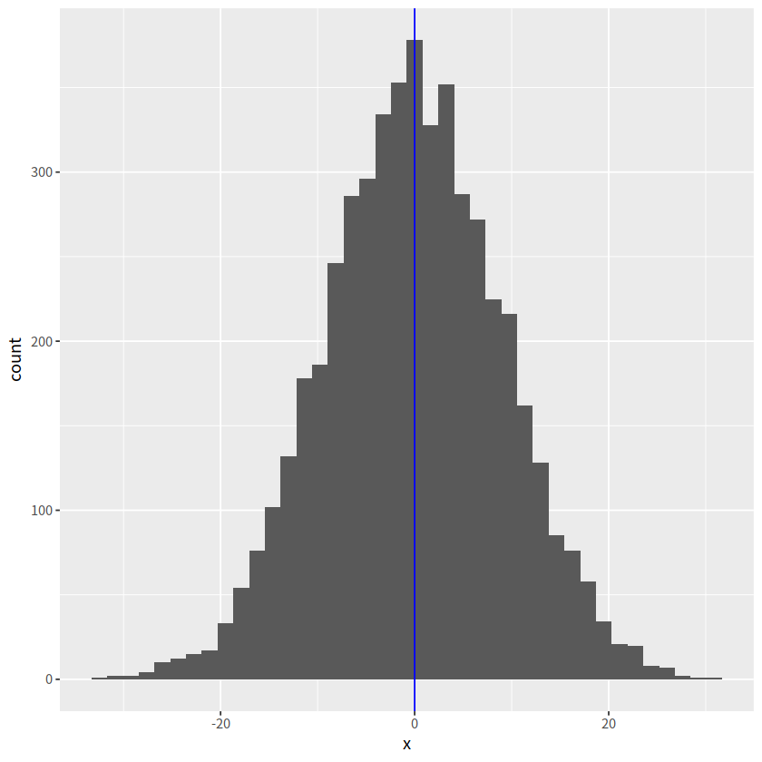
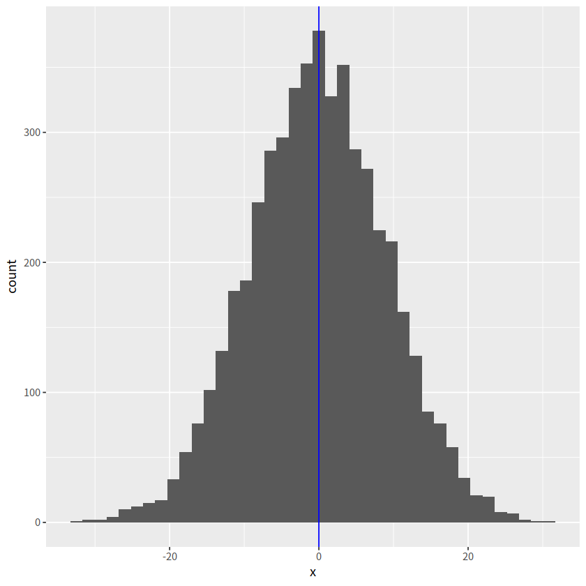

因子型变量_数据框_函数式编程purrr包#
什么是因子#
因子是把数据进行分类并标记为不同层级(level，有时候也翻译成因子水平， 我个人觉得翻译为层级，更接近它的特性，因此，我都会用层级来描述)的数据对象，他们可以存储字符串和整数。因子类型有三个属性：
存储类别的数据类型
离散变量
因子的层级是有限的，只能取因子层级中的值或缺失(
NA)
创建因子#
因子层级会自动按照字符串的字母顺序排序，比如
high low medium。也可以用levels=c()指定顺序不属于因子层级中的值, 会被当作缺省值
NA
library(tidyverse)
── Attaching core tidyverse packages ───────────────────────────────────────────────────────────────────────────────────────────────────────────────────────── tidyverse 2.0.0 ──
✔ dplyr 1.1.4 ✔ readr 2.1.5
✔ forcats 1.0.0 ✔ stringr 1.5.1
✔ ggplot2 3.5.0 ✔ tibble 3.2.1
✔ lubridate 1.9.3 ✔ tidyr 1.3.1
✔ purrr 1.0.2
── Conflicts ─────────────────────────────────────────────────────────────────────────────────────────────────────────────────────────────────────────── tidyverse_conflicts() ──
✖ dplyr::filter() masks stats::filter()
✖ dplyr::lag() masks stats::lag()
ℹ Use the conflicted package (<http://conflicted.r-lib.org/>) to force all conflicts to become errors
library(palmerpenguins)
income <- c("low", "high", "medium", "medium", "low", "high", "high")
factor(income)
- low
- high
- medium
- medium
- low
- high
- high
Levels:
- 'high'
- 'low'
- 'medium'
## 指定顺序
factor(income, levels=c("low", "high", "medium"))
- low
- high
- medium
- medium
- low
- high
- high
Levels:
- 'low'
- 'high'
- 'medium'
factor(income, levels=c("low", "high"))
- low
- high
- <NA>
- <NA>
- low
- high
- high
Levels:
- 'low'
- 'high'
相比较字符串而言，因子类型更容易处理，因此很多函数会自动的将字符串转换为因子来处理，但事实上，这也会造成，不想当做因子的却又当做了因子的情形
最典型的是在R 4.0之前，data.frame()中stringsAsFactors选项，默认将字符串类型转换为因子类型，但这个默认也带来一些不方便，因此在R 4.0之后取消了这个默认。
在tidyverse集合里，有专门处理因子的宏包forcats
library(forcats)
调整因子顺序#
因子层级默认是按照字母顺序排序
fct_relevel()指定因子顺序after=Inf将某个因子移到最后面
fct_inorder()按照字符串第一次出现的次序fct_reorder()按照其他变量的升序排序.fun=指定函数fct_rev()按照因子层级的逆序排序fct_infreq()按照因子频率排序，从大到小fct_rev(fct_infreq())按照因子频率排序，从小到大
income <- c("low", "high", "medium", "medium", "low", "high", "high")
x <- factor(income)
x
# 指定顺序
x %>% fct_relevel(c("high", "medium", "low"))
x %>% fct_relevel("medium")
x %>% fct_relevel("medium", after=Inf)
# 按照字符串第一次出现的次序
x %>% fct_inorder()
- low
- high
- medium
- medium
- low
- high
- high
Levels:
- 'high'
- 'low'
- 'medium'
- low
- high
- medium
- medium
- low
- high
- high
Levels:
- 'high'
- 'medium'
- 'low'
- low
- high
- medium
- medium
- low
- high
- high
Levels:
- 'medium'
- 'high'
- 'low'
- low
- high
- medium
- medium
- low
- high
- high
Levels:
- 'high'
- 'low'
- 'medium'
- low
- high
- medium
- medium
- low
- high
- high
Levels:
- 'low'
- 'high'
- 'medium'
# 按照其他变量的中位数的升序排序
x %>% fct_reorder(c(1:7), .fun=median)
- low
- high
- medium
- medium
- low
- high
- high
Levels:
- 'low'
- 'medium'
- 'high'
应用#
调整因子层级有什么用呢？
这个功能在ggplot可视化中调整分类变量的顺序非常方便
d <- tibble(
x = c("a","a", "b", "b", "c", "c"),
y = c(2, 2, 1, 5, 0, 3)
)
d
| x | y |
|---|---|
| <chr> | <dbl> |
| a | 2 |
| a | 2 |
| b | 1 |
| b | 5 |
| c | 0 |
| c | 3 |
d %>%
ggplot(aes(x = x, y = y))+
geom_point()
fct_reorder()#
fct_reorder(x, y, .fun=median)可以让x的顺序按照x中每个分类变量对应y值的中位数升序排序.desc = TRUE颠倒顺序
d %>%
ggplot(aes(x = fct_reorder(x, y, .fun=median), y = y)) +
geom_point()

d %>%
ggplot(aes(x = fct_reorder(x,y, .fun=median, .desc=TRUE), y = y)) +
geom_point()
d %>%
mutate(x = fct_reorder(x, y, .fun=median, .desc=TRUE)) %>%
ggplot(aes(x = x, y = y)) +
geom_point()


fct_rev()#
按照因子层级的逆序排序
d %>%
mutate(x = fct_rev(x)) %>%
ggplot(aes(x, y)) +
geom_point()

fct_relevel()#
d %>%
mutate(
x = fct_relevel(x, c("c", "a", "b"))
) %>%
ggplot(aes(x, y))+
geom_point()

可视化中应用#
library(palmerpenguins)
ggplot(penguins, aes(y=species))+
geom_bar()

# 按species逆序
ggplot(penguins, aes(y = fct_rev(species)))+
geom_bar()

penguins %>%
count(species) %>%
pull(species)
penguins %>%
count(species) %>%
mutate(species = fct_relevel(species, c("Chinstrap", "Gentoo", "Adelie"))) %>%
pull(species)
# 把Chinstrap移到前面, 其他顺序不变
ggplot(penguins, aes(y = fct_relevel(species, "Chinstrap"))) +
geom_bar()
- Adelie
- Chinstrap
- Gentoo
Levels:
- 'Adelie'
- 'Chinstrap'
- 'Gentoo'
- Adelie
- Chinstrap
- Gentoo
Levels:
- 'Chinstrap'
- 'Gentoo'
- 'Adelie'

# Use order "Chinstrap", "Gentoo", "Adelie"
ggplot(penguins, aes(y = fct_relevel(species, "Chinstrap", "Gentoo", "Adelie"))) +
geom_bar()
penguins %>%
mutate(species = fct_relevel(species, "Chinstrap", "Gentoo", "Adelie")) %>%
ggplot(aes( y = species))+
geom_bar()

# 把Adelie放到最后
ggplot(penguins, aes(y = fct_relevel(species, "Adelie", after=Inf)))+
geom_bar()

# fct_infreq() 按照因子频率，从小到大
penguins %>%
mutate(species = fct_infreq(species)) %>%
ggplot(aes(y = species))+
geom_bar()
penguins %>%
mutate(species = fct_rev(fct_infreq(species))) %>%
ggplot(aes(y = species))+
geom_bar()

# n是count()函数产生的结果
penguins %>%
count(species) %>%
mutate(species = fct_reorder(species, n)) %>%
ggplot(aes(n, species))+
geom_col()

# 画出的2007年美洲人口寿命的柱状图，要求从高到低排序
library(gapminder) # install.packages("gapminder")
gapminder %>%
filter(year == 2007 & continent == "Americas") %>%
ggplot(aes(x = country, y = lifeExp))+
geom_col()+
theme_bw()

# 四个国家人口寿命的变化图
gapminder %>%
filter(country %in% c("Norway", "Portugal", "Spain", "Austria")) %>%
ggplot(aes(year, lifeExp)) +
geom_line() +
facet_wrap(vars(country), nrow = 2)

# 按每个国家寿命的中位数
gapminder %>%
filter(country %in% c("Norway", "Portugal", "Spain", "Austria")) %>%
mutate(country = fct_reorder(country, lifeExp, .fun=median)) %>%
ggplot(aes(year, lifeExp)) +
geom_line() +
facet_wrap(vars(country), nrow = 2)

# 按每个国家寿命差（最大值减去最小值）
cha <- function(x){
max(x) - min(x)
}
gapminder %>%
filter(country %in% c("Norway", "Portugal", "Spain", "Austria")) %>%
mutate(country = fct_reorder(country, lifeExp, .fun=cha)) %>%
ggplot(aes(year, lifeExp)) +
geom_line() +
facet_wrap(vars(country), nrow = 2)

简单数据框#
tidyverse 家族#
前面陆续介绍了tidyverse家族，家庭主要成员包括
功能 |
宏包 |
|---|---|
有颜值担当 |
|
数据处理王者 |
|
数据转换专家 |
|
数据载入利器 |
|
循环加速器 |
|
强化数据框 |
|
字符串处理 |
|
因子处理 |
|
人性化的tibble#

tibble是用来替换data.frame类型的扩展的数据框tibble继承了data.frame，是弱类型的。换句话说，tibble是data.frame的子类型tibble与data.frame有相同的语法，使用起来更方便tibble更早的检查数据，方便写出更干净、更多富有表现力的代码
tibble对data.frame做了重新的设定：
tibble，不关心输入类型，可存储任意类型，包括list类型tibble，没有行名设置row.namestibble，支持任意的列名tibble，会自动添加列名tibble，类型只能回收长度为1的输入tibble，会懒加载参数，并按顺序运行tibble，是tbl_df类型
tibble 与 data.frame#
# 传统创建数据框
data.frame(
a = 1:5,
b = letters[1:5]
)
| a | b |
|---|---|
| <int> | <chr> |
| 1 | a |
| 2 | b |
| 3 | c |
| 4 | d |
| 5 | e |
发现，data.frame()会自动将字符串型的变量转换成因子型，如果想保持原来的字符串型，就得
data.frame(
a = 1:5,
b = letters[1:5],
stringsAsFactors = FALSE
)
| a | b |
|---|---|
| <int> | <chr> |
| 1 | a |
| 2 | b |
| 3 | c |
| 4 | d |
| 5 | e |
Note： - 在R 4.0 后，data.frame() 不会将字符串型变量自动转换成因子型
用tibble创建数据框，不会这么麻烦，输出的就是原来的字符串类型
tibble(
a = 1:5,
b = letters[1:5]
)
| a | b |
|---|---|
| <int> | <chr> |
| 1 | a |
| 2 | b |
| 3 | c |
| 4 | d |
| 5 | e |
构建两个有关联的变量，传统的data.frame()会报错
tb <- tibble(
x = 1:3,
y = x+2)
tb
df <- data.frame(
x = 1:3,
y = x+2
)
| x | y |
|---|---|
| <int> | <dbl> |
| 1 | 3 |
| 2 | 4 |
| 3 | 5 |
Warning message in Ops.factor(x, 2):
“‘+’ not meaningful for factors”
Error in data.frame(x = 1:3, y = x + 2): 参数值意味着不同的行数: 3, 7
Traceback:
1. data.frame(x = 1:3, y = x + 2)
2. stop(gettextf("arguments imply differing number of rows: %s",
. paste(unique(nrows), collapse = ", ")), domain = NA)
tibble用缩写定义了7种类型：
类型 |
含义 |
|---|---|
|
代表 |
|
代表 |
|
代表 |
|
代表日期+时间( |
|
代表逻辑判断 |
|
代表因子类型 |
|
代表日期 |
tibble数据操作#
1 创建tibble#
tibble()创建方式和data.frame()一样tibble::tribble()更加直观
# tibble()创建一个tibble类型的data.frame:
tibble(a = 1:5, b = letters[1:5])
tibble(a = 1:5,
b = 10:14,
c = a + b)
| a | b |
|---|---|
| <int> | <chr> |
| 1 | a |
| 2 | b |
| 3 | c |
| 4 | d |
| 5 | e |
| a | b | c |
|---|---|---|
| <int> | <int> | <int> |
| 1 | 10 | 11 |
| 2 | 11 | 13 |
| 3 | 12 | 15 |
| 4 | 13 | 17 |
| 5 | 14 | 19 |
# 为了让每列更加直观，也可以tribble()创建，数据量不大的时候
tibble::tribble(
~x , ~y, ~z,
"a", 2, 3.6,
"b", 1, 8.5
)
| x | y | z |
|---|---|---|
| <chr> | <dbl> | <dbl> |
| a | 2 | 3.6 |
| b | 1 | 8.5 |
2 转换成tibble类型#
转换成tibble类型意思就是说，刚开始不是tibble, 现在转换成tibble， 包括
data.frame转换成tibbleas_tibble()runif(n, min=0, max=1)生成n个0-1之间的均匀分布随机数as.data.frame()转回去
vector转换成tibblelist转换成tibbleas.list()转回去
matrix转换成tibbletibble转回matrix?as.matrix()
# data.frame转换成tibble
t1 <- iris[1:6, 1:4]
class(t1)
as_tibble(t1)
| Sepal.Length | Sepal.Width | Petal.Length | Petal.Width |
|---|---|---|---|
| <dbl> | <dbl> | <dbl> | <dbl> |
| 5.1 | 3.5 | 1.4 | 0.2 |
| 4.9 | 3.0 | 1.4 | 0.2 |
| 4.7 | 3.2 | 1.3 | 0.2 |
| 4.6 | 3.1 | 1.5 | 0.2 |
| 5.0 | 3.6 | 1.4 | 0.2 |
| 5.4 | 3.9 | 1.7 | 0.4 |
# vector转型到tibble
x <- as_tibble(1:5)
x
| value |
|---|
| <int> |
| 1 |
| 2 |
| 3 |
| 4 |
| 5 |
# 把list转型为tibble
df <- as_tibble(list(x = 1:6, y = runif(6), z= 6:1))
df
# 把tibble再转为list? as.list(df)
| x | y | z |
|---|---|---|
| <int> | <dbl> | <int> |
| 1 | 0.51710681 | 6 |
| 2 | 0.46294658 | 5 |
| 3 | 0.05082761 | 4 |
| 4 | 0.55497789 | 3 |
| 5 | 0.10972415 | 2 |
| 6 | 0.10519147 | 1 |
# 把matrix转型为tibble
m <- matrix(rnorm(15), ncol=5)
m
as_tibble(m)
# tibble转回matrix? as.matrix(df)
| 1.2502136 | 1.6178274 | 0.5113479 | 0.06344089 | 0.90235800 |
| 1.1180396 | -0.5176620 | 0.5803835 | -0.60596035 | 2.09074303 |
| -0.7704595 | -0.6992101 | -0.3455487 | 1.05734880 | 0.09283674 |
Warning message:
“The `x` argument of `as_tibble.matrix()` must have unique column names if `.name_repair` is omitted as of tibble 2.0.0.
ℹ Using compatibility `.name_repair`.”
| V1 | V2 | V3 | V4 | V5 |
|---|---|---|---|---|
| <dbl> | <dbl> | <dbl> | <dbl> | <dbl> |
| 1.2502136 | 1.6178274 | 0.5113479 | 0.06344089 | 0.90235800 |
| 1.1180396 | -0.5176620 | 0.5803835 | -0.60596035 | 2.09074303 |
| -0.7704595 | -0.6992101 | -0.3455487 | 1.05734880 | 0.09283674 |
3 tibble简单操作#
增加一列
add_column()mutate()
增加一行
add_row()默认加在最后.before=n指定加在哪一行
# 构建一个简单的数据框
df <- tibble(
x = 1:2,
y = 2:1
)
df
| x | y |
|---|---|
| <int> | <int> |
| 1 | 2 |
| 2 | 1 |
# 增加一列
add_column(df, z = 0:1, w = 0)
df %>%
mutate(z = 0:1,
w = 0)
| x | y | z | w |
|---|---|---|---|
| <int> | <int> | <int> | <dbl> |
| 1 | 2 | 0 | 0 |
| 2 | 1 | 1 | 0 |
| x | y | z | w |
|---|---|---|---|
| <int> | <int> | <int> | <dbl> |
| 1 | 2 | 0 | 0 |
| 2 | 1 | 1 | 0 |
# 增加一行
add_row(df, x = 99, y = 9)
# 在第二行，增加一行
add_row(df, x = 99, y = 9, .before=2)
| x | y |
|---|---|
| <dbl> | <dbl> |
| 1 | 2 |
| 2 | 1 |
| 99 | 9 |
| x | y |
|---|---|
| <dbl> | <dbl> |
| 1 | 2 |
| 99 | 9 |
| 2 | 1 |
4 有用的函数lst#
lst，创建一个list，具有tibble特性的list。
tibble::lst(n = 5, x = runif(n), y = TRUE)
- $n
- 5
- $x
-
- 0.793093437328935
- 0.938775967340916
- 0.627412877511233
- 0.317401449894533
- 0.664086581440642
- $y
- TRUE
5 有用的函数enframe#
enframe()将矢量快速创建tibble，创建的tibble只有2列:name和value
enframe(1:3)
| name | value |
|---|---|
| <int> | <int> |
| 1 | 1 |
| 2 | 2 |
| 3 | 3 |
enframe(c(a = 5, b = 7, c = 9))
| name | value |
|---|---|
| <chr> | <dbl> |
| a | 5 |
| b | 7 |
| c | 9 |
6 有用的函数deframe#
deframe()可以看做是enframe()的反操作，把tibble反向转成向量
df <- enframe(c(a = 5, b = 7))
df
deframe(df)
| name | value |
|---|---|
| <chr> | <dbl> |
| a | 5 |
| b | 7 |
- a
- 5
- b
- 7
7 读取文件#
read_csv()读取文件时，生成的直接就是tibble
read_csv("./test.csv")
Error: './test.csv' does not exist in current working directory ('/public/home/sll/mybook/content').
Traceback:
1. read_csv("./test.csv")
2. vroom::vroom(file, delim = ",", col_names = col_names, col_types = col_types,
. col_select = {
. {
. col_select
. }
. }, id = id, .name_repair = name_repair, skip = skip, n_max = n_max,
. na = na, quote = quote, comment = comment, skip_empty_rows = skip_empty_rows,
. trim_ws = trim_ws, escape_double = TRUE, escape_backslash = FALSE,
. locale = locale, guess_max = guess_max, show_col_types = show_col_types,
. progress = progress, altrep = lazy, num_threads = num_threads)
3. vroom_(file, delim = delim %||% col_types$delim, col_names = col_names,
. col_types = col_types, id = id, skip = skip, col_select = col_select,
. name_repair = .name_repair, na = na, quote = quote, trim_ws = trim_ws,
. escape_double = escape_double, escape_backslash = escape_backslash,
. comment = comment, skip_empty_rows = skip_empty_rows, locale = locale,
. guess_max = guess_max, n_max = n_max, altrep = vroom_altrep(altrep),
. num_threads = num_threads, progress = progress)
4. (function (path, write = FALSE)
. {
. if (is.raw(path)) {
. return(rawConnection(path, "rb"))
. }
. if (!is.character(path)) {
. return(path)
. }
. if (is_url(path)) {
. if (requireNamespace("curl", quietly = TRUE)) {
. con <- curl::curl(path)
. }
. else {
. inform("`curl` package not installed, falling back to using `url()`")
. con <- url(path)
. }
. ext <- tolower(tools::file_ext(path))
. return(switch(ext, zip = , bz2 = , xz = {
. close(con)
. stop("Reading from remote `", ext, "` compressed files is not supported,\n",
. " download the files locally first.", call. = FALSE)
. }, gz = gzcon(con), con))
. }
. path <- enc2utf8(path)
. p <- split_path_ext(basename_utf8(path))
. if (write) {
. path <- normalizePath_utf8(path, mustWork = FALSE)
. }
. else {
. path <- check_path(path)
. }
. if (is_installed("archive")) {
. formats <- archive_formats(p$extension)
. extension <- p$extension
. while (is.null(formats) && nzchar(extension)) {
. extension <- split_path_ext(extension)$extension
. formats <- archive_formats(extension)
. }
. if (!is.null(formats)) {
. p$extension <- extension
. if (write) {
. if (is.null(formats[[1]])) {
. return(archive::file_write(path, filter = formats[[2]]))
. }
. return(archive::archive_write(path, p$path, format = formats[[1]],
. filter = formats[[2]]))
. }
. if (is.null(formats[[1]])) {
. return(archive::file_read(path, filter = formats[[2]]))
. }
. return(archive::archive_read(path, format = formats[[1]],
. filter = formats[[2]]))
. }
. }
. if (!write) {
. compression <- detect_compression(path)
. }
. else {
. compression <- NA
. }
. if (is.na(compression)) {
. compression <- tools::file_ext(path)
. }
. if (write && compression == "zip") {
. stop("Can only read from, not write to, .zip", call. = FALSE)
. }
. switch(compression, gz = gzfile(path, ""), bz2 = bzfile(path,
. ""), xz = xzfile(path, ""), zip = zipfile(path, ""),
. if (!has_trailing_newline(path)) {
. file(path)
. } else {
. path
. })
. })("./test.csv")
5. check_path(path)
6. stop("'", path, "' does not exist", if (!is_absolute_path(path)) {
. paste0(" in current working directory ('", getwd(), "')")
. }, ".", call. = FALSE)
关于行名#
data.frame是支持行名的，但tibble不支持行名，这也是两者不同的地方
has_rownames(df)判断是否有行名rownames_to_column(df, var="rowname")把df的行名转换为单独的一列rowname，没行索引了就rowid_to_column(df, var="rowid")把df的把行索引转换为单独的一列,多一列rowid
# dataframe 支持行名
df <- data.frame(x = 1:3, y = 3:1)
row.names(df) <- LETTERS[1:3]
df
print("判断是否有行名")
has_rownames(df)
# tibble 不支持行名
tb <- tibble(x = 1:3, y = 3:1)
row.names(tb) <- LETTERS[1:3]
| x | y | |
|---|---|---|
| <int> | <int> | |
| A | 1 | 3 |
| B | 2 | 2 |
| C | 3 | 1 |
[1] "判断是否有行名"
Warning message:
“Setting row names on a tibble is deprecated.”
需要注意的：
有时候遇到含有行名的
data.frame，转换成tibble后，行名会被丢弃如果想保留行名，就需要把行名转换成单独的一列
df <- mtcars[1:3, 1:3]
df
# 把行名转换为单独的一列
rownames_to_column(df, var = "myrow")
# 这俩是添加一列，但行名还在
df$rowname <- rownames(df)
df
df %>%
mutate(rowname = rownames(df))
| mpg | cyl | disp | |
|---|---|---|---|
| <dbl> | <dbl> | <dbl> | |
| Mazda RX4 | 21.0 | 6 | 160 |
| Mazda RX4 Wag | 21.0 | 6 | 160 |
| Datsun 710 | 22.8 | 4 | 108 |
| myrow | mpg | cyl | disp |
|---|---|---|---|
| <chr> | <dbl> | <dbl> | <dbl> |
| Mazda RX4 | 21.0 | 6 | 160 |
| Mazda RX4 Wag | 21.0 | 6 | 160 |
| Datsun 710 | 22.8 | 4 | 108 |
| mpg | cyl | disp | rowname | |
|---|---|---|---|---|
| <dbl> | <dbl> | <dbl> | <chr> | |
| Mazda RX4 | 21.0 | 6 | 160 | Mazda RX4 |
| Mazda RX4 Wag | 21.0 | 6 | 160 | Mazda RX4 Wag |
| Datsun 710 | 22.8 | 4 | 108 | Datsun 710 |
| mpg | cyl | disp | rowname | |
|---|---|---|---|---|
| <dbl> | <dbl> | <dbl> | <chr> | |
| Mazda RX4 | 21.0 | 6 | 160 | Mazda RX4 |
| Mazda RX4 Wag | 21.0 | 6 | 160 | Mazda RX4 Wag |
| Datsun 710 | 22.8 | 4 | 108 | Datsun 710 |
# 把行索引转换为单独的一列
rowid_to_column(df, var="rowid")
| rowid | mpg | cyl | disp | rowname |
|---|---|---|---|---|
| <int> | <dbl> | <dbl> | <dbl> | <chr> |
| 1 | 21.0 | 6 | 160 | Mazda RX4 |
| 2 | 21.0 | 6 | 160 | Mazda RX4 Wag |
| 3 | 22.8 | 4 | 108 | Datsun 710 |
修复列名#
规范的来说，数据框的列名应该是唯一。但现实中代码是人写的，因此可能会稀奇古怪的，所幸的是tibble也提供了人性化的解决方案
.name_repair = "check_unique"检查列名唯一性，但不做修复（默认）.name_repair = "minimal"， 不检查也不修复，维持现状.name_repair = "unique"修复列名，使得列名唯一且不为空.name_repair = "universal"修复列名，使得列名唯一且语法可读make.unique(.x, sep="_")指定修复函数
tibble(x = 1, x = 2)
Error in `tibble()`:
! Column name `x` must not be duplicated.
Use `.name_repair` to specify repair.
Caused by error in `repaired_names()`:
! Names must be unique.
✖ These names are duplicated:
* "x" at locations 1 and 2.
Traceback:
1. tibble(x = 1, x = 2)
2. tibble_quos(xs, .rows, .name_repair)
3. set_repaired_names(output, repair_hint = TRUE, .name_repair = .name_repair,
. call = call)
4. repaired_names(names2(x), repair_hint, .name_repair = .name_repair,
. quiet = quiet, call = call)
5. subclass_name_repair_errors(name = name, details = details, repair_hint = repair_hint,
. vec_as_names(name, repair = .name_repair, quiet = quiet ||
. !is_character(.name_repair)), call = call)
6. withCallingHandlers(expr, vctrs_error_names_cannot_be_empty = function(cnd) {
. abort_column_names_cannot_be_empty(detect_empty_names(name),
. details = details, parent = cnd, repair_hint = repair_hint,
. call = call)
. }, vctrs_error_names_cannot_be_dot_dot = function(cnd) {
. abort_column_names_cannot_be_dot_dot(detect_dot_dot(name),
. parent = cnd, repair_hint = repair_hint, call = call)
. }, vctrs_error_names_must_be_unique = function(cnd) {
. abort_column_names_must_be_unique(detect_duplicates(name),
. parent = cnd, repair_hint = repair_hint, call = call)
. })
7. vec_as_names(name, repair = .name_repair, quiet = quiet || !is_character(.name_repair))
8. (function ()
. validate_unique(names = names, arg = arg, call = call))()
9. validate_unique(names = names, arg = arg, call = call)
10. stop_names_must_be_unique(names, arg, call = call)
11. stop_names(class = "vctrs_error_names_must_be_unique", arg = arg,
. names = names, call = call)
12. stop_vctrs(class = c(class, "vctrs_error_names"), ..., call = call)
13. abort(message, class = c(class, "vctrs_error"), ..., call = call)
14. signal_abort(cnd, .file)
15. signalCondition(cnd)
16. (function (cnd)
. {
. abort_column_names_must_be_unique(detect_duplicates(name),
. parent = cnd, repair_hint = repair_hint, call = call)
. })(structure(list(message = "", trace = structure(list(call = list(
. IRkernel::main(), kernel$run(), handle_shell(), executor$execute(msg),
. tryCatch(evaluate(request$content$code, envir = .GlobalEnv,
. output_handler = oh, stop_on_error = 1L), interrupt = function(cond) {
. log_debug("Interrupt during execution")
. interrupted <<- TRUE
. }, error = .self$handle_error), tryCatchList(expr, classes,
. parentenv, handlers), tryCatchOne(tryCatchList(expr,
. names[-nh], parentenv, handlers[-nh]), names[nh], parentenv,
. handlers[[nh]]), doTryCatch(return(expr), name, parentenv,
. handler), tryCatchList(expr, names[-nh], parentenv, handlers[-nh]),
. tryCatchOne(expr, names, parentenv, handlers[[1L]]), doTryCatch(return(expr),
. name, parentenv, handler), evaluate(request$content$code,
. envir = .GlobalEnv, output_handler = oh, stop_on_error = 1L),
. evaluate_call(expr, parsed$src[[i]], envir = envir, enclos = enclos,
. debug = debug, last = i == length(out), use_try = stop_on_error !=
. 2L, keep_warning = keep_warning, keep_message = keep_message,
. log_echo = log_echo, log_warning = log_warning, output_handler = output_handler,
. include_timing = include_timing), timing_fn(handle(ev <- withCallingHandlers(withVisible(eval_with_user_handlers(expr,
. envir, enclos, user_handlers)), warning = wHandler, error = eHandler,
. message = mHandler))), handle(ev <- withCallingHandlers(withVisible(eval_with_user_handlers(expr,
. envir, enclos, user_handlers)), warning = wHandler, error = eHandler,
. message = mHandler)), try(f, silent = TRUE), tryCatch(expr,
. error = function(e) {
. call <- conditionCall(e)
. if (!is.null(call)) {
. if (identical(call[[1L]], quote(doTryCatch)))
. call <- sys.call(-4L)
. dcall <- deparse(call, nlines = 1L)
. prefix <- paste("Error in", dcall, ": ")
. LONG <- 75L
. sm <- strsplit(conditionMessage(e), "\n")[[1L]]
. w <- 14L + nchar(dcall, type = "w") + nchar(sm[1L],
. type = "w")
. if (is.na(w))
. w <- 14L + nchar(dcall, type = "b") + nchar(sm[1L],
. type = "b")
. if (w > LONG)
. prefix <- paste0(prefix, "\n ")
. }
. else prefix <- "Error : "
. msg <- paste0(prefix, conditionMessage(e), "\n")
. .Internal(seterrmessage(msg[1L]))
. if (!silent && isTRUE(getOption("show.error.messages"))) {
. cat(msg, file = outFile)
. .Internal(printDeferredWarnings())
. }
. invisible(structure(msg, class = "try-error", condition = e))
. }), tryCatchList(expr, classes, parentenv, handlers),
. tryCatchOne(expr, names, parentenv, handlers[[1L]]), doTryCatch(return(expr),
. name, parentenv, handler), withCallingHandlers(withVisible(eval_with_user_handlers(expr,
. envir, enclos, user_handlers)), warning = wHandler, error = eHandler,
. message = mHandler), withVisible(eval_with_user_handlers(expr,
. envir, enclos, user_handlers)), eval_with_user_handlers(expr,
. envir, enclos, user_handlers), eval(expr, envir, enclos),
. eval(expr, envir, enclos), tibble(x = 1, x = 2), tibble_quos(xs,
. .rows, .name_repair), set_repaired_names(output, repair_hint = TRUE,
. .name_repair = .name_repair, call = call), repaired_names(names2(x),
. repair_hint, .name_repair = .name_repair, quiet = quiet,
. call = call), subclass_name_repair_errors(name = name,
. details = details, repair_hint = repair_hint, vec_as_names(name,
. repair = .name_repair, quiet = quiet || !is_character(.name_repair)),
. call = call), withCallingHandlers(expr, vctrs_error_names_cannot_be_empty = function(cnd) {
. abort_column_names_cannot_be_empty(detect_empty_names(name),
. details = details, parent = cnd, repair_hint = repair_hint,
. call = call)
. }, vctrs_error_names_cannot_be_dot_dot = function(cnd) {
. abort_column_names_cannot_be_dot_dot(detect_dot_dot(name),
. parent = cnd, repair_hint = repair_hint, call = call)
. }, vctrs_error_names_must_be_unique = function(cnd) {
. abort_column_names_must_be_unique(detect_duplicates(name),
. parent = cnd, repair_hint = repair_hint, call = call)
. }), vec_as_names(name, repair = .name_repair, quiet = quiet ||
. !is_character(.name_repair)), `<fn>`(), validate_unique(names = names,
. arg = arg, call = call), stop_names_must_be_unique(names,
. arg, call = call), stop_names(class = "vctrs_error_names_must_be_unique",
. arg = arg, names = names, call = call), stop_vctrs(class = c(class,
. "vctrs_error_names"), ..., call = call), abort(message,
. class = c(class, "vctrs_error"), ..., call = call)),
. parent = c(0L, 1L, 2L, 3L, 4L, 5L, 6L, 7L, 6L, 9L, 10L, 4L,
. 12L, 13L, 13L, 15L, 16L, 17L, 18L, 19L, 13L, 13L, 13L, 23L,
. 24L, 0L, 26L, 27L, 28L, 29L, 30L, 29L, 32L, 33L, 34L, 35L,
. 36L, 37L), visible = c(TRUE, TRUE, TRUE, TRUE, TRUE, TRUE,
. TRUE, TRUE, TRUE, TRUE, TRUE, TRUE, TRUE, TRUE, TRUE, TRUE,
. TRUE, TRUE, TRUE, TRUE, TRUE, TRUE, TRUE, TRUE, TRUE, TRUE,
. TRUE, TRUE, TRUE, FALSE, FALSE, FALSE, FALSE, FALSE, FALSE,
. FALSE, FALSE, FALSE), namespace = c("IRkernel", NA, "IRkernel",
. NA, "base", "base", "base", "base", "base", "base", "base",
. "evaluate", "evaluate", "evaluate", "evaluate", "base", "base",
. "base", "base", "base", "base", "base", "evaluate", "base",
. "base", "tibble", "tibble", "tibble", "tibble", "tibble",
. "base", "vctrs", "vctrs", "vctrs", "vctrs", "vctrs", "vctrs",
. "rlang"), scope = c("::", NA, "local", NA, "::", "local",
. "local", "local", "local", "local", "local", "::", ":::",
. "local", "local", "::", "::", "local", "local", "local",
. "::", "::", ":::", "::", "::", "::", ":::", ":::", ":::",
. ":::", "::", "::", "local", ":::", ":::", ":::", ":::", "::"
. ), error_frame = c(FALSE, FALSE, FALSE, FALSE, FALSE, FALSE,
. FALSE, FALSE, FALSE, FALSE, FALSE, FALSE, FALSE, FALSE, FALSE,
. FALSE, FALSE, FALSE, FALSE, FALSE, FALSE, FALSE, FALSE, FALSE,
. FALSE, FALSE, FALSE, FALSE, TRUE, FALSE, FALSE, FALSE, FALSE,
. FALSE, FALSE, FALSE, FALSE, FALSE)), row.names = c(NA, -38L
. ), version = 2L, class = c("rlang_trace", "rlib_trace", "tbl",
. "data.frame")), parent = NULL, arg = NULL, names = c("x", "x"
. ), rlang = list(inherit = TRUE), call = repaired_names(names2(x),
. repair_hint, .name_repair = .name_repair, quiet = quiet,
. call = call)), class = c("vctrs_error_names_must_be_unique",
. "vctrs_error_names", "vctrs_error", "rlang_error", "error", "condition"
. )))
17. abort_column_names_must_be_unique(detect_duplicates(name), parent = cnd,
. repair_hint = repair_hint, call = call)
18. tibble_abort(invalid_df("must not be duplicated", names, use_repair(repair_hint),
. message = "Column name(s)"), names = names, parent = parent,
. call = call)
19. abort(x, class, ..., call = call, parent = parent, use_cli_format = TRUE)
20. signal_abort(cnd, .file)
tibble(x = 1, x = 2, .name_repair = "minimal")
tibble(x = 1, x = 2, .name_repair = "unique")
tibble(x = 1, x = 2, .name_repair = "universal")
| x | x |
|---|---|
| <dbl> | <dbl> |
| 1 | 2 |
New names:
• `x` -> `x...1`
• `x` -> `x...2`
| x...1 | x...2 |
|---|---|
| <dbl> | <dbl> |
| 1 | 2 |
New names:
• `x` -> `x...1`
• `x` -> `x...2`
| x...1 | x...2 |
|---|---|
| <dbl> | <dbl> |
| 1 | 2 |
tibble(x = 1, x = 2, .name_repair = make.unique) # 指定修复函数
tibble(x = 1, x = 2, .name_repair = ~make.unique(.x, sep = "_"))
tibble(x = 1, x = 2, .name_repair = ~make.names(., unique = TRUE))
| x | x.1 |
|---|---|
| <dbl> | <dbl> |
| 1 | 2 |
| x | x_1 |
|---|---|
| <dbl> | <dbl> |
| 1 | 2 |
| x | x.1 |
|---|---|
| <dbl> | <dbl> |
| 1 | 2 |
注意make.unique(names, sep = ".")和make.names(names, unique = FALSE, allow_ = TRUE) 是基础包的函数
List-columns(列表列)#
tibble 本质上是向量构成的列表

大多情况下，我们接触到的向量是原子型向量(atomic vectors)，所谓原子型向量就是向量元素为单个值，比如 “a” 或者 1

tibble还有可以允许某一列为列表(list)，那么列表构成的列，称之为列表列（list columns）

这样一来，列表列非常灵活，因为列表元素可以是原子型向量、列表、矩阵或者小的tibble

nested tibble#
tibble的列表列装载数据的能力很强大，也很灵活。
如何创建和操控有列表列的tibble。
1 creating#
假定我们这里有一个tibble， 我们有三种方法可以创建列表列
nest()summarise()andlist()mutate()andmap()tidyr::nest()创建
使用tidyr::nest(data = c())函数，创建有列表列的tibble, data指定那几列合成列表列data。
除了x列外的其他列就可用nest(data = !x)
# tidyr::nest()
library(tidyverse)
library(palmerpenguins)
df <- penguins %>%
drop_na() %>%
select(species, bill_length_mm, bill_depth_mm, body_mass_g)
df %>% head()
tb <- df %>%
tidyr::nest(data = c(bill_length_mm, bill_depth_mm, body_mass_g))
tb %>% head()
| species | bill_length_mm | bill_depth_mm | body_mass_g |
|---|---|---|---|
| <fct> | <dbl> | <dbl> | <int> |
| Adelie | 39.1 | 18.7 | 3750 |
| Adelie | 39.5 | 17.4 | 3800 |
| Adelie | 40.3 | 18.0 | 3250 |
| Adelie | 36.7 | 19.3 | 3450 |
| Adelie | 39.3 | 20.6 | 3650 |
| Adelie | 38.9 | 17.8 | 3625 |
| species | data |
|---|---|
| <fct> | <list> |
| Adelie | 39.1, 39.5, 40.3, 36.7, 39.3, 38.9, 39.2, 41.1, 38.6, 34.6, 36.6, 38.7, 42.5, 34.4, 46.0, 37.8, 37.7, 35.9, 38.2, 38.8, 35.3, 40.6, 40.5, 37.9, 40.5, 39.5, 37.2, 39.5, 40.9, 36.4, 39.2, 38.8, 42.2, 37.6, 39.8, 36.5, 40.8, 36.0, 44.1, 37.0, 39.6, 41.1, 36.0, 42.3, 39.6, 40.1, 35.0, 42.0, 34.5, 41.4, 39.0, 40.6, 36.5, 37.6, 35.7, 41.3, 37.6, 41.1, 36.4, 41.6, 35.5, 41.1, 35.9, 41.8, 33.5, 39.7, 39.6, 45.8, 35.5, 42.8, 40.9, 37.2, 36.2, 42.1, 34.6, 42.9, 36.7, 35.1, 37.3, 41.3, 36.3, 36.9, 38.3, 38.9, 35.7, 41.1, 34.0, 39.6, 36.2, 40.8, 38.1, 40.3, 33.1, 43.2, 35.0, 41.0, 37.7, 37.8, 37.9, 39.7, 38.6, 38.2, 38.1, 43.2, 38.1, 45.6, 39.7, 42.2, 39.6, 42.7, 38.6, 37.3, 35.7, 41.1, 36.2, 37.7, 40.2, 41.4, 35.2, 40.6, 38.8, 41.5, 39.0, 44.1, 38.5, 43.1, 36.8, 37.5, 38.1, 41.1, 35.6, 40.2, 37.0, 39.7, 40.2, 40.6, 32.1, 40.7, 37.3, 39.0, 39.2, 36.6, 36.0, 37.8, 36.0, 41.5, 18.7, 17.4, 18.0, 19.3, 20.6, 17.8, 19.6, 17.6, 21.2, 21.1, 17.8, 19.0, 20.7, 18.4, 21.5, 18.3, 18.7, 19.2, 18.1, 17.2, 18.9, 18.6, 17.9, 18.6, 18.9, 16.7, 18.1, 17.8, 18.9, 17.0, 21.1, 20.0, 18.5, 19.3, 19.1, 18.0, 18.4, 18.5, 19.7, 16.9, 18.8, 19.0, 17.9, 21.2, 17.7, 18.9, 17.9, 19.5, 18.1, 18.6, 17.5, 18.8, 16.6, 19.1, 16.9, 21.1, 17.0, 18.2, 17.1, 18.0, 16.2, 19.1, 16.6, 19.4, 19.0, 18.4, 17.2, 18.9, 17.5, 18.5, 16.8, 19.4, 16.1, 19.1, 17.2, 17.6, 18.8, 19.4, 17.8, 20.3, 19.5, 18.6, 19.2, 18.8, 18.0, 18.1, 17.1, 18.1, 17.3, 18.9, 18.6, 18.5, 16.1, 18.5, 17.9, 20.0, 16.0, 20.0, 18.6, 18.9, 17.2, 20.0, 17.0, 19.0, 16.5, 20.3, 17.7, 19.5, 20.7, 18.3, 17.0, 20.5, 17.0, 18.6, 17.2, 19.8, 17.0, 18.5, 15.9, 19.0, 17.6, 18.3, 17.1, 18.0, 17.9, 19.2, 18.5, 18.5, 17.6, 17.5, 17.5, 20.1, 16.5, 17.9, 17.1, 17.2, 15.5, 17.0, 16.8, 18.7, 18.6, 18.4, 17.8, 18.1, 17.1, 18.5, 3750.0, 3800.0, 3250.0, 3450.0, 3650.0, 3625.0, 4675.0, 3200.0, 3800.0, 4400.0, 3700.0, 3450.0, 4500.0, 3325.0, 4200.0, 3400.0, 3600.0, 3800.0, 3950.0, 3800.0, 3800.0, 3550.0, 3200.0, 3150.0, 3950.0, 3250.0, 3900.0, 3300.0, 3900.0, 3325.0, 4150.0, 3950.0, 3550.0, 3300.0, 4650.0, 3150.0, 3900.0, 3100.0, 4400.0, 3000.0, 4600.0, 3425.0, 3450.0, 4150.0, 3500.0, 4300.0, 3450.0, 4050.0, 2900.0, 3700.0, 3550.0, 3800.0, 2850.0, 3750.0, 3150.0, 4400.0, 3600.0, 4050.0, 2850.0, 3950.0, 3350.0, 4100.0, 3050.0, 4450.0, 3600.0, 3900.0, 3550.0, 4150.0, 3700.0, 4250.0, 3700.0, 3900.0, 3550.0, 4000.0, 3200.0, 4700.0, 3800.0, 4200.0, 3350.0, 3550.0, 3800.0, 3500.0, 3950.0, 3600.0, 3550.0, 4300.0, 3400.0, 4450.0, 3300.0, 4300.0, 3700.0, 4350.0, 2900.0, 4100.0, 3725.0, 4725.0, 3075.0, 4250.0, 2925.0, 3550.0, 3750.0, 3900.0, 3175.0, 4775.0, 3825.0, 4600.0, 3200.0, 4275.0, 3900.0, 4075.0, 2900.0, 3775.0, 3350.0, 3325.0, 3150.0, 3500.0, 3450.0, 3875.0, 3050.0, 4000.0, 3275.0, 4300.0, 3050.0, 4000.0, 3325.0, 3500.0, 3500.0, 4475.0, 3425.0, 3900.0, 3175.0, 3975.0, 3400.0, 4250.0, 3400.0, 3475.0, 3050.0, 3725.0, 3000.0, 3650.0, 4250.0, 3475.0, 3450.0, 3750.0, 3700.0, 4000.0 |
| Gentoo | 46.1, 50.0, 48.7, 50.0, 47.6, 46.5, 45.4, 46.7, 43.3, 46.8, 40.9, 49.0, 45.5, 48.4, 45.8, 49.3, 42.0, 49.2, 46.2, 48.7, 50.2, 45.1, 46.5, 46.3, 42.9, 46.1, 47.8, 48.2, 50.0, 47.3, 42.8, 45.1, 59.6, 49.1, 48.4, 42.6, 44.4, 44.0, 48.7, 42.7, 49.6, 45.3, 49.6, 50.5, 43.6, 45.5, 50.5, 44.9, 45.2, 46.6, 48.5, 45.1, 50.1, 46.5, 45.0, 43.8, 45.5, 43.2, 50.4, 45.3, 46.2, 45.7, 54.3, 45.8, 49.8, 49.5, 43.5, 50.7, 47.7, 46.4, 48.2, 46.5, 46.4, 48.6, 47.5, 51.1, 45.2, 45.2, 49.1, 52.5, 47.4, 50.0, 44.9, 50.8, 43.4, 51.3, 47.5, 52.1, 47.5, 52.2, 45.5, 49.5, 44.5, 50.8, 49.4, 46.9, 48.4, 51.1, 48.5, 55.9, 47.2, 49.1, 46.8, 41.7, 53.4, 43.3, 48.1, 50.5, 49.8, 43.5, 51.5, 46.2, 55.1, 48.8, 47.2, 46.8, 50.4, 45.2, 49.9, 13.2, 16.3, 14.1, 15.2, 14.5, 13.5, 14.6, 15.3, 13.4, 15.4, 13.7, 16.1, 13.7, 14.6, 14.6, 15.7, 13.5, 15.2, 14.5, 15.1, 14.3, 14.5, 14.5, 15.8, 13.1, 15.1, 15.0, 14.3, 15.3, 15.3, 14.2, 14.5, 17.0, 14.8, 16.3, 13.7, 17.3, 13.6, 15.7, 13.7, 16.0, 13.7, 15.0, 15.9, 13.9, 13.9, 15.9, 13.3, 15.8, 14.2, 14.1, 14.4, 15.0, 14.4, 15.4, 13.9, 15.0, 14.5, 15.3, 13.8, 14.9, 13.9, 15.7, 14.2, 16.8, 16.2, 14.2, 15.0, 15.0, 15.6, 15.6, 14.8, 15.0, 16.0, 14.2, 16.3, 13.8, 16.4, 14.5, 15.6, 14.6, 15.9, 13.8, 17.3, 14.4, 14.2, 14.0, 17.0, 15.0, 17.1, 14.5, 16.1, 14.7, 15.7, 15.8, 14.6, 14.4, 16.5, 15.0, 17.0, 15.5, 15.0, 16.1, 14.7, 15.8, 14.0, 15.1, 15.2, 15.9, 15.2, 16.3, 14.1, 16.0, 16.2, 13.7, 14.3, 15.7, 14.8, 16.1, 4500.0, 5700.0, 4450.0, 5700.0, 5400.0, 4550.0, 4800.0, 5200.0, 4400.0, 5150.0, 4650.0, 5550.0, 4650.0, 5850.0, 4200.0, 5850.0, 4150.0, 6300.0, 4800.0, 5350.0, 5700.0, 5000.0, 4400.0, 5050.0, 5000.0, 5100.0, 5650.0, 4600.0, 5550.0, 5250.0, 4700.0, 5050.0, 6050.0, 5150.0, 5400.0, 4950.0, 5250.0, 4350.0, 5350.0, 3950.0, 5700.0, 4300.0, 4750.0, 5550.0, 4900.0, 4200.0, 5400.0, 5100.0, 5300.0, 4850.0, 5300.0, 4400.0, 5000.0, 4900.0, 5050.0, 4300.0, 5000.0, 4450.0, 5550.0, 4200.0, 5300.0, 4400.0, 5650.0, 4700.0, 5700.0, 5800.0, 4700.0, 5550.0, 4750.0, 5000.0, 5100.0, 5200.0, 4700.0, 5800.0, 4600.0, 6000.0, 4750.0, 5950.0, 4625.0, 5450.0, 4725.0, 5350.0, 4750.0, 5600.0, 4600.0, 5300.0, 4875.0, 5550.0, 4950.0, 5400.0, 4750.0, 5650.0, 4850.0, 5200.0, 4925.0, 4875.0, 4625.0, 5250.0, 4850.0, 5600.0, 4975.0, 5500.0, 5500.0, 4700.0, 5500.0, 4575.0, 5500.0, 5000.0, 5950.0, 4650.0, 5500.0, 4375.0, 5850.0, 6000.0, 4925.0, 4850.0, 5750.0, 5200.0, 5400.0 |
| Chinstrap | 46.5, 50.0, 51.3, 45.4, 52.7, 45.2, 46.1, 51.3, 46.0, 51.3, 46.6, 51.7, 47.0, 52.0, 45.9, 50.5, 50.3, 58.0, 46.4, 49.2, 42.4, 48.5, 43.2, 50.6, 46.7, 52.0, 50.5, 49.5, 46.4, 52.8, 40.9, 54.2, 42.5, 51.0, 49.7, 47.5, 47.6, 52.0, 46.9, 53.5, 49.0, 46.2, 50.9, 45.5, 50.9, 50.8, 50.1, 49.0, 51.5, 49.8, 48.1, 51.4, 45.7, 50.7, 42.5, 52.2, 45.2, 49.3, 50.2, 45.6, 51.9, 46.8, 45.7, 55.8, 43.5, 49.6, 50.8, 50.2, 17.9, 19.5, 19.2, 18.7, 19.8, 17.8, 18.2, 18.2, 18.9, 19.9, 17.8, 20.3, 17.3, 18.1, 17.1, 19.6, 20.0, 17.8, 18.6, 18.2, 17.3, 17.5, 16.6, 19.4, 17.9, 19.0, 18.4, 19.0, 17.8, 20.0, 16.6, 20.8, 16.7, 18.8, 18.6, 16.8, 18.3, 20.7, 16.6, 19.9, 19.5, 17.5, 19.1, 17.0, 17.9, 18.5, 17.9, 19.6, 18.7, 17.3, 16.4, 19.0, 17.3, 19.7, 17.3, 18.8, 16.6, 19.9, 18.8, 19.4, 19.5, 16.5, 17.0, 19.8, 18.1, 18.2, 19.0, 18.7, 3500.0, 3900.0, 3650.0, 3525.0, 3725.0, 3950.0, 3250.0, 3750.0, 4150.0, 3700.0, 3800.0, 3775.0, 3700.0, 4050.0, 3575.0, 4050.0, 3300.0, 3700.0, 3450.0, 4400.0, 3600.0, 3400.0, 2900.0, 3800.0, 3300.0, 4150.0, 3400.0, 3800.0, 3700.0, 4550.0, 3200.0, 4300.0, 3350.0, 4100.0, 3600.0, 3900.0, 3850.0, 4800.0, 2700.0, 4500.0, 3950.0, 3650.0, 3550.0, 3500.0, 3675.0, 4450.0, 3400.0, 4300.0, 3250.0, 3675.0, 3325.0, 3950.0, 3600.0, 4050.0, 3350.0, 3450.0, 3250.0, 4050.0, 3800.0, 3525.0, 3950.0, 3650.0, 3650.0, 4000.0, 3400.0, 3775.0, 4100.0, 3775.0 |
nest() 为每种species创建了一个小的tibble， 每个小的tibble对应一个species
tb$data[[1]] %>% head()
tb$data %>% typeof()
tb$data %>% class()
| bill_length_mm | bill_depth_mm | body_mass_g |
|---|---|---|
| <dbl> | <dbl> | <int> |
| 39.1 | 18.7 | 3750 |
| 39.5 | 17.4 | 3800 |
| 40.3 | 18.0 | 3250 |
| 36.7 | 19.3 | 3450 |
| 39.3 | 20.6 | 3650 |
| 38.9 | 17.8 | 3625 |
# 除了species列之外的其他列组合成list_columns
df %>%
nest(data = !species)
| species | data |
|---|---|
| <fct> | <list> |
| Adelie | 39.1, 39.5, 40.3, 36.7, 39.3, 38.9, 39.2, 41.1, 38.6, 34.6, 36.6, 38.7, 42.5, 34.4, 46.0, 37.8, 37.7, 35.9, 38.2, 38.8, 35.3, 40.6, 40.5, 37.9, 40.5, 39.5, 37.2, 39.5, 40.9, 36.4, 39.2, 38.8, 42.2, 37.6, 39.8, 36.5, 40.8, 36.0, 44.1, 37.0, 39.6, 41.1, 36.0, 42.3, 39.6, 40.1, 35.0, 42.0, 34.5, 41.4, 39.0, 40.6, 36.5, 37.6, 35.7, 41.3, 37.6, 41.1, 36.4, 41.6, 35.5, 41.1, 35.9, 41.8, 33.5, 39.7, 39.6, 45.8, 35.5, 42.8, 40.9, 37.2, 36.2, 42.1, 34.6, 42.9, 36.7, 35.1, 37.3, 41.3, 36.3, 36.9, 38.3, 38.9, 35.7, 41.1, 34.0, 39.6, 36.2, 40.8, 38.1, 40.3, 33.1, 43.2, 35.0, 41.0, 37.7, 37.8, 37.9, 39.7, 38.6, 38.2, 38.1, 43.2, 38.1, 45.6, 39.7, 42.2, 39.6, 42.7, 38.6, 37.3, 35.7, 41.1, 36.2, 37.7, 40.2, 41.4, 35.2, 40.6, 38.8, 41.5, 39.0, 44.1, 38.5, 43.1, 36.8, 37.5, 38.1, 41.1, 35.6, 40.2, 37.0, 39.7, 40.2, 40.6, 32.1, 40.7, 37.3, 39.0, 39.2, 36.6, 36.0, 37.8, 36.0, 41.5, 18.7, 17.4, 18.0, 19.3, 20.6, 17.8, 19.6, 17.6, 21.2, 21.1, 17.8, 19.0, 20.7, 18.4, 21.5, 18.3, 18.7, 19.2, 18.1, 17.2, 18.9, 18.6, 17.9, 18.6, 18.9, 16.7, 18.1, 17.8, 18.9, 17.0, 21.1, 20.0, 18.5, 19.3, 19.1, 18.0, 18.4, 18.5, 19.7, 16.9, 18.8, 19.0, 17.9, 21.2, 17.7, 18.9, 17.9, 19.5, 18.1, 18.6, 17.5, 18.8, 16.6, 19.1, 16.9, 21.1, 17.0, 18.2, 17.1, 18.0, 16.2, 19.1, 16.6, 19.4, 19.0, 18.4, 17.2, 18.9, 17.5, 18.5, 16.8, 19.4, 16.1, 19.1, 17.2, 17.6, 18.8, 19.4, 17.8, 20.3, 19.5, 18.6, 19.2, 18.8, 18.0, 18.1, 17.1, 18.1, 17.3, 18.9, 18.6, 18.5, 16.1, 18.5, 17.9, 20.0, 16.0, 20.0, 18.6, 18.9, 17.2, 20.0, 17.0, 19.0, 16.5, 20.3, 17.7, 19.5, 20.7, 18.3, 17.0, 20.5, 17.0, 18.6, 17.2, 19.8, 17.0, 18.5, 15.9, 19.0, 17.6, 18.3, 17.1, 18.0, 17.9, 19.2, 18.5, 18.5, 17.6, 17.5, 17.5, 20.1, 16.5, 17.9, 17.1, 17.2, 15.5, 17.0, 16.8, 18.7, 18.6, 18.4, 17.8, 18.1, 17.1, 18.5, 3750.0, 3800.0, 3250.0, 3450.0, 3650.0, 3625.0, 4675.0, 3200.0, 3800.0, 4400.0, 3700.0, 3450.0, 4500.0, 3325.0, 4200.0, 3400.0, 3600.0, 3800.0, 3950.0, 3800.0, 3800.0, 3550.0, 3200.0, 3150.0, 3950.0, 3250.0, 3900.0, 3300.0, 3900.0, 3325.0, 4150.0, 3950.0, 3550.0, 3300.0, 4650.0, 3150.0, 3900.0, 3100.0, 4400.0, 3000.0, 4600.0, 3425.0, 3450.0, 4150.0, 3500.0, 4300.0, 3450.0, 4050.0, 2900.0, 3700.0, 3550.0, 3800.0, 2850.0, 3750.0, 3150.0, 4400.0, 3600.0, 4050.0, 2850.0, 3950.0, 3350.0, 4100.0, 3050.0, 4450.0, 3600.0, 3900.0, 3550.0, 4150.0, 3700.0, 4250.0, 3700.0, 3900.0, 3550.0, 4000.0, 3200.0, 4700.0, 3800.0, 4200.0, 3350.0, 3550.0, 3800.0, 3500.0, 3950.0, 3600.0, 3550.0, 4300.0, 3400.0, 4450.0, 3300.0, 4300.0, 3700.0, 4350.0, 2900.0, 4100.0, 3725.0, 4725.0, 3075.0, 4250.0, 2925.0, 3550.0, 3750.0, 3900.0, 3175.0, 4775.0, 3825.0, 4600.0, 3200.0, 4275.0, 3900.0, 4075.0, 2900.0, 3775.0, 3350.0, 3325.0, 3150.0, 3500.0, 3450.0, 3875.0, 3050.0, 4000.0, 3275.0, 4300.0, 3050.0, 4000.0, 3325.0, 3500.0, 3500.0, 4475.0, 3425.0, 3900.0, 3175.0, 3975.0, 3400.0, 4250.0, 3400.0, 3475.0, 3050.0, 3725.0, 3000.0, 3650.0, 4250.0, 3475.0, 3450.0, 3750.0, 3700.0, 4000.0 |
| Gentoo | 46.1, 50.0, 48.7, 50.0, 47.6, 46.5, 45.4, 46.7, 43.3, 46.8, 40.9, 49.0, 45.5, 48.4, 45.8, 49.3, 42.0, 49.2, 46.2, 48.7, 50.2, 45.1, 46.5, 46.3, 42.9, 46.1, 47.8, 48.2, 50.0, 47.3, 42.8, 45.1, 59.6, 49.1, 48.4, 42.6, 44.4, 44.0, 48.7, 42.7, 49.6, 45.3, 49.6, 50.5, 43.6, 45.5, 50.5, 44.9, 45.2, 46.6, 48.5, 45.1, 50.1, 46.5, 45.0, 43.8, 45.5, 43.2, 50.4, 45.3, 46.2, 45.7, 54.3, 45.8, 49.8, 49.5, 43.5, 50.7, 47.7, 46.4, 48.2, 46.5, 46.4, 48.6, 47.5, 51.1, 45.2, 45.2, 49.1, 52.5, 47.4, 50.0, 44.9, 50.8, 43.4, 51.3, 47.5, 52.1, 47.5, 52.2, 45.5, 49.5, 44.5, 50.8, 49.4, 46.9, 48.4, 51.1, 48.5, 55.9, 47.2, 49.1, 46.8, 41.7, 53.4, 43.3, 48.1, 50.5, 49.8, 43.5, 51.5, 46.2, 55.1, 48.8, 47.2, 46.8, 50.4, 45.2, 49.9, 13.2, 16.3, 14.1, 15.2, 14.5, 13.5, 14.6, 15.3, 13.4, 15.4, 13.7, 16.1, 13.7, 14.6, 14.6, 15.7, 13.5, 15.2, 14.5, 15.1, 14.3, 14.5, 14.5, 15.8, 13.1, 15.1, 15.0, 14.3, 15.3, 15.3, 14.2, 14.5, 17.0, 14.8, 16.3, 13.7, 17.3, 13.6, 15.7, 13.7, 16.0, 13.7, 15.0, 15.9, 13.9, 13.9, 15.9, 13.3, 15.8, 14.2, 14.1, 14.4, 15.0, 14.4, 15.4, 13.9, 15.0, 14.5, 15.3, 13.8, 14.9, 13.9, 15.7, 14.2, 16.8, 16.2, 14.2, 15.0, 15.0, 15.6, 15.6, 14.8, 15.0, 16.0, 14.2, 16.3, 13.8, 16.4, 14.5, 15.6, 14.6, 15.9, 13.8, 17.3, 14.4, 14.2, 14.0, 17.0, 15.0, 17.1, 14.5, 16.1, 14.7, 15.7, 15.8, 14.6, 14.4, 16.5, 15.0, 17.0, 15.5, 15.0, 16.1, 14.7, 15.8, 14.0, 15.1, 15.2, 15.9, 15.2, 16.3, 14.1, 16.0, 16.2, 13.7, 14.3, 15.7, 14.8, 16.1, 4500.0, 5700.0, 4450.0, 5700.0, 5400.0, 4550.0, 4800.0, 5200.0, 4400.0, 5150.0, 4650.0, 5550.0, 4650.0, 5850.0, 4200.0, 5850.0, 4150.0, 6300.0, 4800.0, 5350.0, 5700.0, 5000.0, 4400.0, 5050.0, 5000.0, 5100.0, 5650.0, 4600.0, 5550.0, 5250.0, 4700.0, 5050.0, 6050.0, 5150.0, 5400.0, 4950.0, 5250.0, 4350.0, 5350.0, 3950.0, 5700.0, 4300.0, 4750.0, 5550.0, 4900.0, 4200.0, 5400.0, 5100.0, 5300.0, 4850.0, 5300.0, 4400.0, 5000.0, 4900.0, 5050.0, 4300.0, 5000.0, 4450.0, 5550.0, 4200.0, 5300.0, 4400.0, 5650.0, 4700.0, 5700.0, 5800.0, 4700.0, 5550.0, 4750.0, 5000.0, 5100.0, 5200.0, 4700.0, 5800.0, 4600.0, 6000.0, 4750.0, 5950.0, 4625.0, 5450.0, 4725.0, 5350.0, 4750.0, 5600.0, 4600.0, 5300.0, 4875.0, 5550.0, 4950.0, 5400.0, 4750.0, 5650.0, 4850.0, 5200.0, 4925.0, 4875.0, 4625.0, 5250.0, 4850.0, 5600.0, 4975.0, 5500.0, 5500.0, 4700.0, 5500.0, 4575.0, 5500.0, 5000.0, 5950.0, 4650.0, 5500.0, 4375.0, 5850.0, 6000.0, 4925.0, 4850.0, 5750.0, 5200.0, 5400.0 |
| Chinstrap | 46.5, 50.0, 51.3, 45.4, 52.7, 45.2, 46.1, 51.3, 46.0, 51.3, 46.6, 51.7, 47.0, 52.0, 45.9, 50.5, 50.3, 58.0, 46.4, 49.2, 42.4, 48.5, 43.2, 50.6, 46.7, 52.0, 50.5, 49.5, 46.4, 52.8, 40.9, 54.2, 42.5, 51.0, 49.7, 47.5, 47.6, 52.0, 46.9, 53.5, 49.0, 46.2, 50.9, 45.5, 50.9, 50.8, 50.1, 49.0, 51.5, 49.8, 48.1, 51.4, 45.7, 50.7, 42.5, 52.2, 45.2, 49.3, 50.2, 45.6, 51.9, 46.8, 45.7, 55.8, 43.5, 49.6, 50.8, 50.2, 17.9, 19.5, 19.2, 18.7, 19.8, 17.8, 18.2, 18.2, 18.9, 19.9, 17.8, 20.3, 17.3, 18.1, 17.1, 19.6, 20.0, 17.8, 18.6, 18.2, 17.3, 17.5, 16.6, 19.4, 17.9, 19.0, 18.4, 19.0, 17.8, 20.0, 16.6, 20.8, 16.7, 18.8, 18.6, 16.8, 18.3, 20.7, 16.6, 19.9, 19.5, 17.5, 19.1, 17.0, 17.9, 18.5, 17.9, 19.6, 18.7, 17.3, 16.4, 19.0, 17.3, 19.7, 17.3, 18.8, 16.6, 19.9, 18.8, 19.4, 19.5, 16.5, 17.0, 19.8, 18.1, 18.2, 19.0, 18.7, 3500.0, 3900.0, 3650.0, 3525.0, 3725.0, 3950.0, 3250.0, 3750.0, 4150.0, 3700.0, 3800.0, 3775.0, 3700.0, 4050.0, 3575.0, 4050.0, 3300.0, 3700.0, 3450.0, 4400.0, 3600.0, 3400.0, 2900.0, 3800.0, 3300.0, 4150.0, 3400.0, 3800.0, 3700.0, 4550.0, 3200.0, 4300.0, 3350.0, 4100.0, 3600.0, 3900.0, 3850.0, 4800.0, 2700.0, 4500.0, 3950.0, 3650.0, 3550.0, 3500.0, 3675.0, 4450.0, 3400.0, 4300.0, 3250.0, 3675.0, 3325.0, 3950.0, 3600.0, 4050.0, 3350.0, 3450.0, 3250.0, 4050.0, 3800.0, 3525.0, 3950.0, 3650.0, 3650.0, 4000.0, 3400.0, 3775.0, 4100.0, 3775.0 |
# 同时创建多个列表列
df %>%
nest(data1 = c(bill_length_mm, bill_depth_mm), data2 = body_mass_g)
| species | data1 | data2 |
|---|---|---|
| <fct> | <list> | <list> |
| Adelie | 39.1, 39.5, 40.3, 36.7, 39.3, 38.9, 39.2, 41.1, 38.6, 34.6, 36.6, 38.7, 42.5, 34.4, 46.0, 37.8, 37.7, 35.9, 38.2, 38.8, 35.3, 40.6, 40.5, 37.9, 40.5, 39.5, 37.2, 39.5, 40.9, 36.4, 39.2, 38.8, 42.2, 37.6, 39.8, 36.5, 40.8, 36.0, 44.1, 37.0, 39.6, 41.1, 36.0, 42.3, 39.6, 40.1, 35.0, 42.0, 34.5, 41.4, 39.0, 40.6, 36.5, 37.6, 35.7, 41.3, 37.6, 41.1, 36.4, 41.6, 35.5, 41.1, 35.9, 41.8, 33.5, 39.7, 39.6, 45.8, 35.5, 42.8, 40.9, 37.2, 36.2, 42.1, 34.6, 42.9, 36.7, 35.1, 37.3, 41.3, 36.3, 36.9, 38.3, 38.9, 35.7, 41.1, 34.0, 39.6, 36.2, 40.8, 38.1, 40.3, 33.1, 43.2, 35.0, 41.0, 37.7, 37.8, 37.9, 39.7, 38.6, 38.2, 38.1, 43.2, 38.1, 45.6, 39.7, 42.2, 39.6, 42.7, 38.6, 37.3, 35.7, 41.1, 36.2, 37.7, 40.2, 41.4, 35.2, 40.6, 38.8, 41.5, 39.0, 44.1, 38.5, 43.1, 36.8, 37.5, 38.1, 41.1, 35.6, 40.2, 37.0, 39.7, 40.2, 40.6, 32.1, 40.7, 37.3, 39.0, 39.2, 36.6, 36.0, 37.8, 36.0, 41.5, 18.7, 17.4, 18.0, 19.3, 20.6, 17.8, 19.6, 17.6, 21.2, 21.1, 17.8, 19.0, 20.7, 18.4, 21.5, 18.3, 18.7, 19.2, 18.1, 17.2, 18.9, 18.6, 17.9, 18.6, 18.9, 16.7, 18.1, 17.8, 18.9, 17.0, 21.1, 20.0, 18.5, 19.3, 19.1, 18.0, 18.4, 18.5, 19.7, 16.9, 18.8, 19.0, 17.9, 21.2, 17.7, 18.9, 17.9, 19.5, 18.1, 18.6, 17.5, 18.8, 16.6, 19.1, 16.9, 21.1, 17.0, 18.2, 17.1, 18.0, 16.2, 19.1, 16.6, 19.4, 19.0, 18.4, 17.2, 18.9, 17.5, 18.5, 16.8, 19.4, 16.1, 19.1, 17.2, 17.6, 18.8, 19.4, 17.8, 20.3, 19.5, 18.6, 19.2, 18.8, 18.0, 18.1, 17.1, 18.1, 17.3, 18.9, 18.6, 18.5, 16.1, 18.5, 17.9, 20.0, 16.0, 20.0, 18.6, 18.9, 17.2, 20.0, 17.0, 19.0, 16.5, 20.3, 17.7, 19.5, 20.7, 18.3, 17.0, 20.5, 17.0, 18.6, 17.2, 19.8, 17.0, 18.5, 15.9, 19.0, 17.6, 18.3, 17.1, 18.0, 17.9, 19.2, 18.5, 18.5, 17.6, 17.5, 17.5, 20.1, 16.5, 17.9, 17.1, 17.2, 15.5, 17.0, 16.8, 18.7, 18.6, 18.4, 17.8, 18.1, 17.1, 18.5 | 3750, 3800, 3250, 3450, 3650, 3625, 4675, 3200, 3800, 4400, 3700, 3450, 4500, 3325, 4200, 3400, 3600, 3800, 3950, 3800, 3800, 3550, 3200, 3150, 3950, 3250, 3900, 3300, 3900, 3325, 4150, 3950, 3550, 3300, 4650, 3150, 3900, 3100, 4400, 3000, 4600, 3425, 3450, 4150, 3500, 4300, 3450, 4050, 2900, 3700, 3550, 3800, 2850, 3750, 3150, 4400, 3600, 4050, 2850, 3950, 3350, 4100, 3050, 4450, 3600, 3900, 3550, 4150, 3700, 4250, 3700, 3900, 3550, 4000, 3200, 4700, 3800, 4200, 3350, 3550, 3800, 3500, 3950, 3600, 3550, 4300, 3400, 4450, 3300, 4300, 3700, 4350, 2900, 4100, 3725, 4725, 3075, 4250, 2925, 3550, 3750, 3900, 3175, 4775, 3825, 4600, 3200, 4275, 3900, 4075, 2900, 3775, 3350, 3325, 3150, 3500, 3450, 3875, 3050, 4000, 3275, 4300, 3050, 4000, 3325, 3500, 3500, 4475, 3425, 3900, 3175, 3975, 3400, 4250, 3400, 3475, 3050, 3725, 3000, 3650, 4250, 3475, 3450, 3750, 3700, 4000 |
| Gentoo | 46.1, 50.0, 48.7, 50.0, 47.6, 46.5, 45.4, 46.7, 43.3, 46.8, 40.9, 49.0, 45.5, 48.4, 45.8, 49.3, 42.0, 49.2, 46.2, 48.7, 50.2, 45.1, 46.5, 46.3, 42.9, 46.1, 47.8, 48.2, 50.0, 47.3, 42.8, 45.1, 59.6, 49.1, 48.4, 42.6, 44.4, 44.0, 48.7, 42.7, 49.6, 45.3, 49.6, 50.5, 43.6, 45.5, 50.5, 44.9, 45.2, 46.6, 48.5, 45.1, 50.1, 46.5, 45.0, 43.8, 45.5, 43.2, 50.4, 45.3, 46.2, 45.7, 54.3, 45.8, 49.8, 49.5, 43.5, 50.7, 47.7, 46.4, 48.2, 46.5, 46.4, 48.6, 47.5, 51.1, 45.2, 45.2, 49.1, 52.5, 47.4, 50.0, 44.9, 50.8, 43.4, 51.3, 47.5, 52.1, 47.5, 52.2, 45.5, 49.5, 44.5, 50.8, 49.4, 46.9, 48.4, 51.1, 48.5, 55.9, 47.2, 49.1, 46.8, 41.7, 53.4, 43.3, 48.1, 50.5, 49.8, 43.5, 51.5, 46.2, 55.1, 48.8, 47.2, 46.8, 50.4, 45.2, 49.9, 13.2, 16.3, 14.1, 15.2, 14.5, 13.5, 14.6, 15.3, 13.4, 15.4, 13.7, 16.1, 13.7, 14.6, 14.6, 15.7, 13.5, 15.2, 14.5, 15.1, 14.3, 14.5, 14.5, 15.8, 13.1, 15.1, 15.0, 14.3, 15.3, 15.3, 14.2, 14.5, 17.0, 14.8, 16.3, 13.7, 17.3, 13.6, 15.7, 13.7, 16.0, 13.7, 15.0, 15.9, 13.9, 13.9, 15.9, 13.3, 15.8, 14.2, 14.1, 14.4, 15.0, 14.4, 15.4, 13.9, 15.0, 14.5, 15.3, 13.8, 14.9, 13.9, 15.7, 14.2, 16.8, 16.2, 14.2, 15.0, 15.0, 15.6, 15.6, 14.8, 15.0, 16.0, 14.2, 16.3, 13.8, 16.4, 14.5, 15.6, 14.6, 15.9, 13.8, 17.3, 14.4, 14.2, 14.0, 17.0, 15.0, 17.1, 14.5, 16.1, 14.7, 15.7, 15.8, 14.6, 14.4, 16.5, 15.0, 17.0, 15.5, 15.0, 16.1, 14.7, 15.8, 14.0, 15.1, 15.2, 15.9, 15.2, 16.3, 14.1, 16.0, 16.2, 13.7, 14.3, 15.7, 14.8, 16.1 | 4500, 5700, 4450, 5700, 5400, 4550, 4800, 5200, 4400, 5150, 4650, 5550, 4650, 5850, 4200, 5850, 4150, 6300, 4800, 5350, 5700, 5000, 4400, 5050, 5000, 5100, 5650, 4600, 5550, 5250, 4700, 5050, 6050, 5150, 5400, 4950, 5250, 4350, 5350, 3950, 5700, 4300, 4750, 5550, 4900, 4200, 5400, 5100, 5300, 4850, 5300, 4400, 5000, 4900, 5050, 4300, 5000, 4450, 5550, 4200, 5300, 4400, 5650, 4700, 5700, 5800, 4700, 5550, 4750, 5000, 5100, 5200, 4700, 5800, 4600, 6000, 4750, 5950, 4625, 5450, 4725, 5350, 4750, 5600, 4600, 5300, 4875, 5550, 4950, 5400, 4750, 5650, 4850, 5200, 4925, 4875, 4625, 5250, 4850, 5600, 4975, 5500, 5500, 4700, 5500, 4575, 5500, 5000, 5950, 4650, 5500, 4375, 5850, 6000, 4925, 4850, 5750, 5200, 5400 |
| Chinstrap | 46.5, 50.0, 51.3, 45.4, 52.7, 45.2, 46.1, 51.3, 46.0, 51.3, 46.6, 51.7, 47.0, 52.0, 45.9, 50.5, 50.3, 58.0, 46.4, 49.2, 42.4, 48.5, 43.2, 50.6, 46.7, 52.0, 50.5, 49.5, 46.4, 52.8, 40.9, 54.2, 42.5, 51.0, 49.7, 47.5, 47.6, 52.0, 46.9, 53.5, 49.0, 46.2, 50.9, 45.5, 50.9, 50.8, 50.1, 49.0, 51.5, 49.8, 48.1, 51.4, 45.7, 50.7, 42.5, 52.2, 45.2, 49.3, 50.2, 45.6, 51.9, 46.8, 45.7, 55.8, 43.5, 49.6, 50.8, 50.2, 17.9, 19.5, 19.2, 18.7, 19.8, 17.8, 18.2, 18.2, 18.9, 19.9, 17.8, 20.3, 17.3, 18.1, 17.1, 19.6, 20.0, 17.8, 18.6, 18.2, 17.3, 17.5, 16.6, 19.4, 17.9, 19.0, 18.4, 19.0, 17.8, 20.0, 16.6, 20.8, 16.7, 18.8, 18.6, 16.8, 18.3, 20.7, 16.6, 19.9, 19.5, 17.5, 19.1, 17.0, 17.9, 18.5, 17.9, 19.6, 18.7, 17.3, 16.4, 19.0, 17.3, 19.7, 17.3, 18.8, 16.6, 19.9, 18.8, 19.4, 19.5, 16.5, 17.0, 19.8, 18.1, 18.2, 19.0, 18.7 | 3500, 3900, 3650, 3525, 3725, 3950, 3250, 3750, 4150, 3700, 3800, 3775, 3700, 4050, 3575, 4050, 3300, 3700, 3450, 4400, 3600, 3400, 2900, 3800, 3300, 4150, 3400, 3800, 3700, 4550, 3200, 4300, 3350, 4100, 3600, 3900, 3850, 4800, 2700, 4500, 3950, 3650, 3550, 3500, 3675, 4450, 3400, 4300, 3250, 3675, 3325, 3950, 3600, 4050, 3350, 3450, 3250, 4050, 3800, 3525, 3950, 3650, 3650, 4000, 3400, 3775, 4100, 3775 |
1 creating#
tidyr::summarise(list())创建#
group_by() 和 summarise()组合可以将向量分组后分别压缩成单个值，事实上，summarise()还可以创建列表列。
df_collpase <- df %>%
group_by(species) %>%
summarise(data = list(bill_length_mm))
df_collpase
| species | data |
|---|---|
| <fct> | <list> |
| Adelie | 39.1, 39.5, 40.3, 36.7, 39.3, 38.9, 39.2, 41.1, 38.6, 34.6, 36.6, 38.7, 42.5, 34.4, 46.0, 37.8, 37.7, 35.9, 38.2, 38.8, 35.3, 40.6, 40.5, 37.9, 40.5, 39.5, 37.2, 39.5, 40.9, 36.4, 39.2, 38.8, 42.2, 37.6, 39.8, 36.5, 40.8, 36.0, 44.1, 37.0, 39.6, 41.1, 36.0, 42.3, 39.6, 40.1, 35.0, 42.0, 34.5, 41.4, 39.0, 40.6, 36.5, 37.6, 35.7, 41.3, 37.6, 41.1, 36.4, 41.6, 35.5, 41.1, 35.9, 41.8, 33.5, 39.7, 39.6, 45.8, 35.5, 42.8, 40.9, 37.2, 36.2, 42.1, 34.6, 42.9, 36.7, 35.1, 37.3, 41.3, 36.3, 36.9, 38.3, 38.9, 35.7, 41.1, 34.0, 39.6, 36.2, 40.8, 38.1, 40.3, 33.1, 43.2, 35.0, 41.0, 37.7, 37.8, 37.9, 39.7, 38.6, 38.2, 38.1, 43.2, 38.1, 45.6, 39.7, 42.2, 39.6, 42.7, 38.6, 37.3, 35.7, 41.1, 36.2, 37.7, 40.2, 41.4, 35.2, 40.6, 38.8, 41.5, 39.0, 44.1, 38.5, 43.1, 36.8, 37.5, 38.1, 41.1, 35.6, 40.2, 37.0, 39.7, 40.2, 40.6, 32.1, 40.7, 37.3, 39.0, 39.2, 36.6, 36.0, 37.8, 36.0, 41.5 |
| Chinstrap | 46.5, 50.0, 51.3, 45.4, 52.7, 45.2, 46.1, 51.3, 46.0, 51.3, 46.6, 51.7, 47.0, 52.0, 45.9, 50.5, 50.3, 58.0, 46.4, 49.2, 42.4, 48.5, 43.2, 50.6, 46.7, 52.0, 50.5, 49.5, 46.4, 52.8, 40.9, 54.2, 42.5, 51.0, 49.7, 47.5, 47.6, 52.0, 46.9, 53.5, 49.0, 46.2, 50.9, 45.5, 50.9, 50.8, 50.1, 49.0, 51.5, 49.8, 48.1, 51.4, 45.7, 50.7, 42.5, 52.2, 45.2, 49.3, 50.2, 45.6, 51.9, 46.8, 45.7, 55.8, 43.5, 49.6, 50.8, 50.2 |
| Gentoo | 46.1, 50.0, 48.7, 50.0, 47.6, 46.5, 45.4, 46.7, 43.3, 46.8, 40.9, 49.0, 45.5, 48.4, 45.8, 49.3, 42.0, 49.2, 46.2, 48.7, 50.2, 45.1, 46.5, 46.3, 42.9, 46.1, 47.8, 48.2, 50.0, 47.3, 42.8, 45.1, 59.6, 49.1, 48.4, 42.6, 44.4, 44.0, 48.7, 42.7, 49.6, 45.3, 49.6, 50.5, 43.6, 45.5, 50.5, 44.9, 45.2, 46.6, 48.5, 45.1, 50.1, 46.5, 45.0, 43.8, 45.5, 43.2, 50.4, 45.3, 46.2, 45.7, 54.3, 45.8, 49.8, 49.5, 43.5, 50.7, 47.7, 46.4, 48.2, 46.5, 46.4, 48.6, 47.5, 51.1, 45.2, 45.2, 49.1, 52.5, 47.4, 50.0, 44.9, 50.8, 43.4, 51.3, 47.5, 52.1, 47.5, 52.2, 45.5, 49.5, 44.5, 50.8, 49.4, 46.9, 48.4, 51.1, 48.5, 55.9, 47.2, 49.1, 46.8, 41.7, 53.4, 43.3, 48.1, 50.5, 49.8, 43.5, 51.5, 46.2, 55.1, 48.8, 47.2, 46.8, 50.4, 45.2, 49.9 |
data就是构建的列表列，它的每个元素都是一个向量，对应一个species。这种方法和nest()方法很相似，不同在于，summarise() + list() 构建的列表列其元素是原子型向量，而nest()构建的是tibble.
df_collpase$data[[1]] %>% typeof()
summarise() + list()的方法还可以在创建列表列之前，对数据简单处理
# 排序
df %>%
group_by(species) %>%
summarise(data = list(sort(bill_length_mm)))
# 筛选
df %>%
group_by(species) %>%
summarise(data = list(bill_length_mm[bill_length_mm > 45]))
| species | data |
|---|---|
| <fct> | <list> |
| Adelie | 32.1, 33.1, 33.5, 34.0, 34.4, 34.5, 34.6, 34.6, 35.0, 35.0, 35.1, 35.2, 35.3, 35.5, 35.5, 35.6, 35.7, 35.7, 35.7, 35.9, 35.9, 36.0, 36.0, 36.0, 36.0, 36.2, 36.2, 36.2, 36.3, 36.4, 36.4, 36.5, 36.5, 36.6, 36.6, 36.7, 36.7, 36.8, 36.9, 37.0, 37.0, 37.2, 37.2, 37.3, 37.3, 37.3, 37.5, 37.6, 37.6, 37.6, 37.7, 37.7, 37.7, 37.8, 37.8, 37.8, 37.9, 37.9, 38.1, 38.1, 38.1, 38.1, 38.2, 38.2, 38.3, 38.5, 38.6, 38.6, 38.6, 38.7, 38.8, 38.8, 38.8, 38.9, 38.9, 39.0, 39.0, 39.0, 39.1, 39.2, 39.2, 39.2, 39.3, 39.5, 39.5, 39.5, 39.6, 39.6, 39.6, 39.6, 39.6, 39.7, 39.7, 39.7, 39.7, 39.8, 40.1, 40.2, 40.2, 40.2, 40.3, 40.3, 40.5, 40.5, 40.6, 40.6, 40.6, 40.6, 40.7, 40.8, 40.8, 40.9, 40.9, 41.0, 41.1, 41.1, 41.1, 41.1, 41.1, 41.1, 41.1, 41.3, 41.3, 41.4, 41.4, 41.5, 41.5, 41.6, 41.8, 42.0, 42.1, 42.2, 42.2, 42.3, 42.5, 42.7, 42.8, 42.9, 43.1, 43.2, 43.2, 44.1, 44.1, 45.6, 45.8, 46.0 |
| Chinstrap | 40.9, 42.4, 42.5, 42.5, 43.2, 43.5, 45.2, 45.2, 45.4, 45.5, 45.6, 45.7, 45.7, 45.9, 46.0, 46.1, 46.2, 46.4, 46.4, 46.5, 46.6, 46.7, 46.8, 46.9, 47.0, 47.5, 47.6, 48.1, 48.5, 49.0, 49.0, 49.2, 49.3, 49.5, 49.6, 49.7, 49.8, 50.0, 50.1, 50.2, 50.2, 50.3, 50.5, 50.5, 50.6, 50.7, 50.8, 50.8, 50.9, 50.9, 51.0, 51.3, 51.3, 51.3, 51.4, 51.5, 51.7, 51.9, 52.0, 52.0, 52.0, 52.2, 52.7, 52.8, 53.5, 54.2, 55.8, 58.0 |
| Gentoo | 40.9, 41.7, 42.0, 42.6, 42.7, 42.8, 42.9, 43.2, 43.3, 43.3, 43.4, 43.5, 43.5, 43.6, 43.8, 44.0, 44.4, 44.5, 44.9, 44.9, 45.0, 45.1, 45.1, 45.1, 45.2, 45.2, 45.2, 45.2, 45.3, 45.3, 45.4, 45.5, 45.5, 45.5, 45.5, 45.7, 45.8, 45.8, 46.1, 46.1, 46.2, 46.2, 46.2, 46.3, 46.4, 46.4, 46.5, 46.5, 46.5, 46.5, 46.6, 46.7, 46.8, 46.8, 46.8, 46.9, 47.2, 47.2, 47.3, 47.4, 47.5, 47.5, 47.5, 47.6, 47.7, 47.8, 48.1, 48.2, 48.2, 48.4, 48.4, 48.4, 48.5, 48.5, 48.6, 48.7, 48.7, 48.7, 48.8, 49.0, 49.1, 49.1, 49.1, 49.2, 49.3, 49.4, 49.5, 49.5, 49.6, 49.6, 49.8, 49.8, 49.9, 50.0, 50.0, 50.0, 50.0, 50.1, 50.2, 50.4, 50.4, 50.5, 50.5, 50.5, 50.7, 50.8, 50.8, 51.1, 51.1, 51.3, 51.5, 52.1, 52.2, 52.5, 53.4, 54.3, 55.1, 55.9, 59.6 |
| species | data |
|---|---|
| <fct> | <list> |
| Adelie | 46.0, 45.8, 45.6 |
| Chinstrap | 46.5, 50.0, 51.3, 45.4, 52.7, 45.2, 46.1, 51.3, 46.0, 51.3, 46.6, 51.7, 47.0, 52.0, 45.9, 50.5, 50.3, 58.0, 46.4, 49.2, 48.5, 50.6, 46.7, 52.0, 50.5, 49.5, 46.4, 52.8, 54.2, 51.0, 49.7, 47.5, 47.6, 52.0, 46.9, 53.5, 49.0, 46.2, 50.9, 45.5, 50.9, 50.8, 50.1, 49.0, 51.5, 49.8, 48.1, 51.4, 45.7, 50.7, 52.2, 45.2, 49.3, 50.2, 45.6, 51.9, 46.8, 45.7, 55.8, 49.6, 50.8, 50.2 |
| Gentoo | 46.1, 50.0, 48.7, 50.0, 47.6, 46.5, 45.4, 46.7, 46.8, 49.0, 45.5, 48.4, 45.8, 49.3, 49.2, 46.2, 48.7, 50.2, 45.1, 46.5, 46.3, 46.1, 47.8, 48.2, 50.0, 47.3, 45.1, 59.6, 49.1, 48.4, 48.7, 49.6, 45.3, 49.6, 50.5, 45.5, 50.5, 45.2, 46.6, 48.5, 45.1, 50.1, 46.5, 45.5, 50.4, 45.3, 46.2, 45.7, 54.3, 45.8, 49.8, 49.5, 50.7, 47.7, 46.4, 48.2, 46.5, 46.4, 48.6, 47.5, 51.1, 45.2, 45.2, 49.1, 52.5, 47.4, 50.0, 50.8, 51.3, 47.5, 52.1, 47.5, 52.2, 45.5, 49.5, 50.8, 49.4, 46.9, 48.4, 51.1, 48.5, 55.9, 47.2, 49.1, 46.8, 53.4, 48.1, 50.5, 49.8, 51.5, 46.2, 55.1, 48.8, 47.2, 46.8, 50.4, 45.2, 49.9 |
1 creating#
dplyr::mutate()创建#
第三种方法是用
rowwise()+mutate()，比如，下面为每个岛屿(island) 创建一个与该岛企鹅数量等长的随机数向量，简单点说，这个岛屿上企鹅有多少只，那么随机数的个数就有多少个。rowwise()对数据后续的操作按行进行
penguins %>%
drop_na() %>%
group_by(species) %>%
summarise(
n_num = n()
) %>%
rowwise() %>%
mutate(random = list(rnorm(n = n_num))) %>%
ungroup()
| species | n_num | random |
|---|---|---|
| <fct> | <int> | <list> |
| Adelie | 146 | 1.236420854, 0.058598272, 0.747679874, 0.586278768, 0.438737160, -0.287537641, 1.133045806, -0.373954814, -0.195164959, 0.399717051, -0.148851397, -0.192797851, -1.230120028, 0.153025024, 0.872343047, -0.740619852, -0.611730620, -0.217983257, -0.189460047, -0.973954458, -1.036361459, 0.284206082, -0.827654680, -1.164263619, 1.178230978, -1.169450904, 0.667579005, 0.127807457, -0.631868306, -1.746392763, 2.175611719, 0.821713641, -0.046088370, 2.105540253, 2.139539371, -0.548505654, -0.733264749, 0.875223763, 0.528007289, 2.456495052, -0.412050599, 1.240704208, 0.378669000, 0.340683768, -0.679256959, 1.017650235, 0.040275816, -0.205921134, 0.219835706, 0.789203600, -0.835140429, -2.335475821, -0.023620477, -0.114781915, -0.499948603, 0.516480690, -0.743546710, 0.924009662, 0.852371984, 0.500899709, -0.234903531, -2.202927496, -1.603642668, 0.750569352, 0.512701816, -2.111379414, 0.635026961, 0.936210586, -0.089496997, -0.008420686, 1.972443438, 0.961411710, 0.191073712, -0.859583110, -0.755409933, -1.180940165, -1.208025394, 0.597708602, 0.413000911, 1.703813026, 0.084479758, -0.356711624, 1.542731090, 1.686840151, 2.312238511, 0.094231894, -1.423555797, -0.154550966, 0.562533880, 2.416083427, -0.387457539, -1.981286182, 1.354884181, 0.336187862, -1.804809540, 0.249469285, 0.664087696, -0.460201121, -1.090800526, -1.537694833, -0.075504693, 1.007416312, -1.454678101, -1.543915329, 0.839577836, 0.825052330, 0.369245895, -0.448539300, -0.057106618, -1.494522633, 0.507341954, -0.445404737, -0.280773287, -1.422925870, 0.966857570, -0.409252921, 1.175884668, -0.242148269, -0.340639964, 0.060047216, 0.209239991, 0.253589173, 0.292259911, -0.400052380, -0.005376802, -0.483114689, 1.172113333, 0.155623701, 0.207083660, 0.414160512, 0.438772178, 1.371961131, -0.561785717, 0.527234964, 1.247415150, -0.408849303, -0.531910211, 0.062683454, -0.709190635, -1.283558114, 1.811504358, 0.960077781, -0.204662423, -0.811287089, -0.828281985, 0.830985535 |
| Chinstrap | 68 | -1.33148502, 0.20721003, -1.05620347, -1.41035518, -0.23283569, 1.95942292, -2.95849403, -0.04600433, -0.75130463, 0.30986372, -0.15446309, -0.46724031, 0.88461533, -0.94995403, 0.35203735, -0.47049619, 2.22637400, -1.68507192, -1.64746368, -0.31378081, -0.37791141, 0.79875279, 0.84094202, -0.20287822, -0.04708536, 0.68393686, -1.13909991, -1.20559102, -0.32443238, 1.30852977, -0.55422568, 1.78861584, 1.24449146, -0.71462053, 0.35134631, -1.64925640, 0.71870054, -0.99027650, -0.03632335, -0.45096807, 1.92038459, 0.08519594, 0.74995678, 0.24015577, -0.34055026, -0.24851411, -1.38847214, -0.11179605, -0.13705184, -0.61450812, 0.95323627, -0.91784688, 0.07129392, 0.94078221, -0.09263853, -0.75152984, -0.13402454, -1.48714657, -0.68098075, -0.03197984, -1.21807478, 0.58040069, 1.75319512, 0.64570769, 1.76911944, -0.88608024, -0.98096739, -0.64911726 |
| Gentoo | 119 | 0.1206178903, -1.1085620709, 0.4806708479, -1.4294746670, 0.5227428059, 0.8063283133, -0.5810337637, -1.0775182428, 0.4780391073, 0.1552280902, 2.4686767291, -0.5656660644, 0.7778722986, 0.9719173888, 0.9367344650, 0.6017891969, 0.3508255027, -1.8236415043, -0.3505602945, -1.2954456338, 0.9626556411, 1.3523297655, 0.1022159295, -0.0002157032, -1.3562357458, -0.8962866537, 1.9303620583, 2.0088827449, -1.5687737986, 0.5758590104, -0.1353355863, -0.1049712729, -0.5813035340, 0.3548372763, 0.0373397171, -0.4502060059, -2.4494848437, -0.6033287351, -0.5575028124, -0.2513607985, -1.2701313744, -0.3211480888, -1.9856924420, -0.8720330825, -1.4807107847, -0.3303593187, 1.3919121868, 1.9069334798, 0.6646663314, -1.5294152508, 1.3672316767, 0.9658540963, 0.1624850801, -0.6440596906, -0.7845236596, -2.2447959282, -1.4576901284, 1.3611109761, 0.5969105654, 0.3316033054, 1.3009486373, 0.9065209119, 0.5752653840, 0.5432625060, 0.8722508584, -0.6751973379, 1.4493031197, 0.1814196464, -1.1650791840, 0.7169177515, -0.4442789262, -1.3013650751, 0.1097926527, 0.0545293429, -0.2028182218, -0.2172361861, -0.9687751437, 0.3139943584, -1.5731406251, 0.2394670597, 0.4530442609, -1.2626116948, -0.4134241744, 0.7930906416, 0.3564965615, 0.1483177643, 0.1113727712, 0.7160701809, 1.4903930654, -0.6871089478, -0.2939674712, 0.6722377239, 0.2336864260, 0.5090760267, -0.1514486182, -0.1788784434, -0.5061381314, 0.3391482227, 0.7521615466, 0.5063911052, 0.5091418998, -1.4533921567, 0.8867181810, -0.6850976928, -0.9480634853, 0.5685672247, 2.2288691161, 1.4269427661, 0.4869040995, 0.2245295067, 0.8675997864, -0.2481008324, -0.6287879310, 0.2953713581, -0.1322214239, 0.2900677928, 0.8452144701, -1.6858147947, -0.2970845483 |
2 Unnesting#
用unnest(cols = )函数可以把列表列转换成常规列的形式,也就是还原成正常样式
tb
| species | data |
|---|---|
| <fct> | <list> |
| Adelie | 39.1, 39.5, 40.3, 36.7, 39.3, 38.9, 39.2, 41.1, 38.6, 34.6, 36.6, 38.7, 42.5, 34.4, 46.0, 37.8, 37.7, 35.9, 38.2, 38.8, 35.3, 40.6, 40.5, 37.9, 40.5, 39.5, 37.2, 39.5, 40.9, 36.4, 39.2, 38.8, 42.2, 37.6, 39.8, 36.5, 40.8, 36.0, 44.1, 37.0, 39.6, 41.1, 36.0, 42.3, 39.6, 40.1, 35.0, 42.0, 34.5, 41.4, 39.0, 40.6, 36.5, 37.6, 35.7, 41.3, 37.6, 41.1, 36.4, 41.6, 35.5, 41.1, 35.9, 41.8, 33.5, 39.7, 39.6, 45.8, 35.5, 42.8, 40.9, 37.2, 36.2, 42.1, 34.6, 42.9, 36.7, 35.1, 37.3, 41.3, 36.3, 36.9, 38.3, 38.9, 35.7, 41.1, 34.0, 39.6, 36.2, 40.8, 38.1, 40.3, 33.1, 43.2, 35.0, 41.0, 37.7, 37.8, 37.9, 39.7, 38.6, 38.2, 38.1, 43.2, 38.1, 45.6, 39.7, 42.2, 39.6, 42.7, 38.6, 37.3, 35.7, 41.1, 36.2, 37.7, 40.2, 41.4, 35.2, 40.6, 38.8, 41.5, 39.0, 44.1, 38.5, 43.1, 36.8, 37.5, 38.1, 41.1, 35.6, 40.2, 37.0, 39.7, 40.2, 40.6, 32.1, 40.7, 37.3, 39.0, 39.2, 36.6, 36.0, 37.8, 36.0, 41.5, 18.7, 17.4, 18.0, 19.3, 20.6, 17.8, 19.6, 17.6, 21.2, 21.1, 17.8, 19.0, 20.7, 18.4, 21.5, 18.3, 18.7, 19.2, 18.1, 17.2, 18.9, 18.6, 17.9, 18.6, 18.9, 16.7, 18.1, 17.8, 18.9, 17.0, 21.1, 20.0, 18.5, 19.3, 19.1, 18.0, 18.4, 18.5, 19.7, 16.9, 18.8, 19.0, 17.9, 21.2, 17.7, 18.9, 17.9, 19.5, 18.1, 18.6, 17.5, 18.8, 16.6, 19.1, 16.9, 21.1, 17.0, 18.2, 17.1, 18.0, 16.2, 19.1, 16.6, 19.4, 19.0, 18.4, 17.2, 18.9, 17.5, 18.5, 16.8, 19.4, 16.1, 19.1, 17.2, 17.6, 18.8, 19.4, 17.8, 20.3, 19.5, 18.6, 19.2, 18.8, 18.0, 18.1, 17.1, 18.1, 17.3, 18.9, 18.6, 18.5, 16.1, 18.5, 17.9, 20.0, 16.0, 20.0, 18.6, 18.9, 17.2, 20.0, 17.0, 19.0, 16.5, 20.3, 17.7, 19.5, 20.7, 18.3, 17.0, 20.5, 17.0, 18.6, 17.2, 19.8, 17.0, 18.5, 15.9, 19.0, 17.6, 18.3, 17.1, 18.0, 17.9, 19.2, 18.5, 18.5, 17.6, 17.5, 17.5, 20.1, 16.5, 17.9, 17.1, 17.2, 15.5, 17.0, 16.8, 18.7, 18.6, 18.4, 17.8, 18.1, 17.1, 18.5, 3750.0, 3800.0, 3250.0, 3450.0, 3650.0, 3625.0, 4675.0, 3200.0, 3800.0, 4400.0, 3700.0, 3450.0, 4500.0, 3325.0, 4200.0, 3400.0, 3600.0, 3800.0, 3950.0, 3800.0, 3800.0, 3550.0, 3200.0, 3150.0, 3950.0, 3250.0, 3900.0, 3300.0, 3900.0, 3325.0, 4150.0, 3950.0, 3550.0, 3300.0, 4650.0, 3150.0, 3900.0, 3100.0, 4400.0, 3000.0, 4600.0, 3425.0, 3450.0, 4150.0, 3500.0, 4300.0, 3450.0, 4050.0, 2900.0, 3700.0, 3550.0, 3800.0, 2850.0, 3750.0, 3150.0, 4400.0, 3600.0, 4050.0, 2850.0, 3950.0, 3350.0, 4100.0, 3050.0, 4450.0, 3600.0, 3900.0, 3550.0, 4150.0, 3700.0, 4250.0, 3700.0, 3900.0, 3550.0, 4000.0, 3200.0, 4700.0, 3800.0, 4200.0, 3350.0, 3550.0, 3800.0, 3500.0, 3950.0, 3600.0, 3550.0, 4300.0, 3400.0, 4450.0, 3300.0, 4300.0, 3700.0, 4350.0, 2900.0, 4100.0, 3725.0, 4725.0, 3075.0, 4250.0, 2925.0, 3550.0, 3750.0, 3900.0, 3175.0, 4775.0, 3825.0, 4600.0, 3200.0, 4275.0, 3900.0, 4075.0, 2900.0, 3775.0, 3350.0, 3325.0, 3150.0, 3500.0, 3450.0, 3875.0, 3050.0, 4000.0, 3275.0, 4300.0, 3050.0, 4000.0, 3325.0, 3500.0, 3500.0, 4475.0, 3425.0, 3900.0, 3175.0, 3975.0, 3400.0, 4250.0, 3400.0, 3475.0, 3050.0, 3725.0, 3000.0, 3650.0, 4250.0, 3475.0, 3450.0, 3750.0, 3700.0, 4000.0 |
| Gentoo | 46.1, 50.0, 48.7, 50.0, 47.6, 46.5, 45.4, 46.7, 43.3, 46.8, 40.9, 49.0, 45.5, 48.4, 45.8, 49.3, 42.0, 49.2, 46.2, 48.7, 50.2, 45.1, 46.5, 46.3, 42.9, 46.1, 47.8, 48.2, 50.0, 47.3, 42.8, 45.1, 59.6, 49.1, 48.4, 42.6, 44.4, 44.0, 48.7, 42.7, 49.6, 45.3, 49.6, 50.5, 43.6, 45.5, 50.5, 44.9, 45.2, 46.6, 48.5, 45.1, 50.1, 46.5, 45.0, 43.8, 45.5, 43.2, 50.4, 45.3, 46.2, 45.7, 54.3, 45.8, 49.8, 49.5, 43.5, 50.7, 47.7, 46.4, 48.2, 46.5, 46.4, 48.6, 47.5, 51.1, 45.2, 45.2, 49.1, 52.5, 47.4, 50.0, 44.9, 50.8, 43.4, 51.3, 47.5, 52.1, 47.5, 52.2, 45.5, 49.5, 44.5, 50.8, 49.4, 46.9, 48.4, 51.1, 48.5, 55.9, 47.2, 49.1, 46.8, 41.7, 53.4, 43.3, 48.1, 50.5, 49.8, 43.5, 51.5, 46.2, 55.1, 48.8, 47.2, 46.8, 50.4, 45.2, 49.9, 13.2, 16.3, 14.1, 15.2, 14.5, 13.5, 14.6, 15.3, 13.4, 15.4, 13.7, 16.1, 13.7, 14.6, 14.6, 15.7, 13.5, 15.2, 14.5, 15.1, 14.3, 14.5, 14.5, 15.8, 13.1, 15.1, 15.0, 14.3, 15.3, 15.3, 14.2, 14.5, 17.0, 14.8, 16.3, 13.7, 17.3, 13.6, 15.7, 13.7, 16.0, 13.7, 15.0, 15.9, 13.9, 13.9, 15.9, 13.3, 15.8, 14.2, 14.1, 14.4, 15.0, 14.4, 15.4, 13.9, 15.0, 14.5, 15.3, 13.8, 14.9, 13.9, 15.7, 14.2, 16.8, 16.2, 14.2, 15.0, 15.0, 15.6, 15.6, 14.8, 15.0, 16.0, 14.2, 16.3, 13.8, 16.4, 14.5, 15.6, 14.6, 15.9, 13.8, 17.3, 14.4, 14.2, 14.0, 17.0, 15.0, 17.1, 14.5, 16.1, 14.7, 15.7, 15.8, 14.6, 14.4, 16.5, 15.0, 17.0, 15.5, 15.0, 16.1, 14.7, 15.8, 14.0, 15.1, 15.2, 15.9, 15.2, 16.3, 14.1, 16.0, 16.2, 13.7, 14.3, 15.7, 14.8, 16.1, 4500.0, 5700.0, 4450.0, 5700.0, 5400.0, 4550.0, 4800.0, 5200.0, 4400.0, 5150.0, 4650.0, 5550.0, 4650.0, 5850.0, 4200.0, 5850.0, 4150.0, 6300.0, 4800.0, 5350.0, 5700.0, 5000.0, 4400.0, 5050.0, 5000.0, 5100.0, 5650.0, 4600.0, 5550.0, 5250.0, 4700.0, 5050.0, 6050.0, 5150.0, 5400.0, 4950.0, 5250.0, 4350.0, 5350.0, 3950.0, 5700.0, 4300.0, 4750.0, 5550.0, 4900.0, 4200.0, 5400.0, 5100.0, 5300.0, 4850.0, 5300.0, 4400.0, 5000.0, 4900.0, 5050.0, 4300.0, 5000.0, 4450.0, 5550.0, 4200.0, 5300.0, 4400.0, 5650.0, 4700.0, 5700.0, 5800.0, 4700.0, 5550.0, 4750.0, 5000.0, 5100.0, 5200.0, 4700.0, 5800.0, 4600.0, 6000.0, 4750.0, 5950.0, 4625.0, 5450.0, 4725.0, 5350.0, 4750.0, 5600.0, 4600.0, 5300.0, 4875.0, 5550.0, 4950.0, 5400.0, 4750.0, 5650.0, 4850.0, 5200.0, 4925.0, 4875.0, 4625.0, 5250.0, 4850.0, 5600.0, 4975.0, 5500.0, 5500.0, 4700.0, 5500.0, 4575.0, 5500.0, 5000.0, 5950.0, 4650.0, 5500.0, 4375.0, 5850.0, 6000.0, 4925.0, 4850.0, 5750.0, 5200.0, 5400.0 |
| Chinstrap | 46.5, 50.0, 51.3, 45.4, 52.7, 45.2, 46.1, 51.3, 46.0, 51.3, 46.6, 51.7, 47.0, 52.0, 45.9, 50.5, 50.3, 58.0, 46.4, 49.2, 42.4, 48.5, 43.2, 50.6, 46.7, 52.0, 50.5, 49.5, 46.4, 52.8, 40.9, 54.2, 42.5, 51.0, 49.7, 47.5, 47.6, 52.0, 46.9, 53.5, 49.0, 46.2, 50.9, 45.5, 50.9, 50.8, 50.1, 49.0, 51.5, 49.8, 48.1, 51.4, 45.7, 50.7, 42.5, 52.2, 45.2, 49.3, 50.2, 45.6, 51.9, 46.8, 45.7, 55.8, 43.5, 49.6, 50.8, 50.2, 17.9, 19.5, 19.2, 18.7, 19.8, 17.8, 18.2, 18.2, 18.9, 19.9, 17.8, 20.3, 17.3, 18.1, 17.1, 19.6, 20.0, 17.8, 18.6, 18.2, 17.3, 17.5, 16.6, 19.4, 17.9, 19.0, 18.4, 19.0, 17.8, 20.0, 16.6, 20.8, 16.7, 18.8, 18.6, 16.8, 18.3, 20.7, 16.6, 19.9, 19.5, 17.5, 19.1, 17.0, 17.9, 18.5, 17.9, 19.6, 18.7, 17.3, 16.4, 19.0, 17.3, 19.7, 17.3, 18.8, 16.6, 19.9, 18.8, 19.4, 19.5, 16.5, 17.0, 19.8, 18.1, 18.2, 19.0, 18.7, 3500.0, 3900.0, 3650.0, 3525.0, 3725.0, 3950.0, 3250.0, 3750.0, 4150.0, 3700.0, 3800.0, 3775.0, 3700.0, 4050.0, 3575.0, 4050.0, 3300.0, 3700.0, 3450.0, 4400.0, 3600.0, 3400.0, 2900.0, 3800.0, 3300.0, 4150.0, 3400.0, 3800.0, 3700.0, 4550.0, 3200.0, 4300.0, 3350.0, 4100.0, 3600.0, 3900.0, 3850.0, 4800.0, 2700.0, 4500.0, 3950.0, 3650.0, 3550.0, 3500.0, 3675.0, 4450.0, 3400.0, 4300.0, 3250.0, 3675.0, 3325.0, 3950.0, 3600.0, 4050.0, 3350.0, 3450.0, 3250.0, 4050.0, 3800.0, 3525.0, 3950.0, 3650.0, 3650.0, 4000.0, 3400.0, 3775.0, 4100.0, 3775.0 |
tb %>%
unnest(cols = data) %>%
head()
| species | bill_length_mm | bill_depth_mm | body_mass_g |
|---|---|---|---|
| <fct> | <dbl> | <dbl> | <int> |
| Adelie | 39.1 | 18.7 | 3750 |
| Adelie | 39.5 | 17.4 | 3800 |
| Adelie | 40.3 | 18.0 | 3250 |
| Adelie | 36.7 | 19.3 | 3450 |
| Adelie | 39.3 | 20.6 | 3650 |
| Adelie | 38.9 | 17.8 | 3625 |
Manipulating#
操控列表列是一件有趣的事情，我们常常会借助于行方向的操作(rowwise)。比如找出每个岛屿企鹅的数量，我们需要对data列表列的元素依次迭代，
tb %>%
rowwise() %>%
mutate(num_species = nrow(data))
| species | data | num_species |
|---|---|---|
| <fct> | <list> | <int> |
| Adelie | 39.1, 39.5, 40.3, 36.7, 39.3, 38.9, 39.2, 41.1, 38.6, 34.6, 36.6, 38.7, 42.5, 34.4, 46.0, 37.8, 37.7, 35.9, 38.2, 38.8, 35.3, 40.6, 40.5, 37.9, 40.5, 39.5, 37.2, 39.5, 40.9, 36.4, 39.2, 38.8, 42.2, 37.6, 39.8, 36.5, 40.8, 36.0, 44.1, 37.0, 39.6, 41.1, 36.0, 42.3, 39.6, 40.1, 35.0, 42.0, 34.5, 41.4, 39.0, 40.6, 36.5, 37.6, 35.7, 41.3, 37.6, 41.1, 36.4, 41.6, 35.5, 41.1, 35.9, 41.8, 33.5, 39.7, 39.6, 45.8, 35.5, 42.8, 40.9, 37.2, 36.2, 42.1, 34.6, 42.9, 36.7, 35.1, 37.3, 41.3, 36.3, 36.9, 38.3, 38.9, 35.7, 41.1, 34.0, 39.6, 36.2, 40.8, 38.1, 40.3, 33.1, 43.2, 35.0, 41.0, 37.7, 37.8, 37.9, 39.7, 38.6, 38.2, 38.1, 43.2, 38.1, 45.6, 39.7, 42.2, 39.6, 42.7, 38.6, 37.3, 35.7, 41.1, 36.2, 37.7, 40.2, 41.4, 35.2, 40.6, 38.8, 41.5, 39.0, 44.1, 38.5, 43.1, 36.8, 37.5, 38.1, 41.1, 35.6, 40.2, 37.0, 39.7, 40.2, 40.6, 32.1, 40.7, 37.3, 39.0, 39.2, 36.6, 36.0, 37.8, 36.0, 41.5, 18.7, 17.4, 18.0, 19.3, 20.6, 17.8, 19.6, 17.6, 21.2, 21.1, 17.8, 19.0, 20.7, 18.4, 21.5, 18.3, 18.7, 19.2, 18.1, 17.2, 18.9, 18.6, 17.9, 18.6, 18.9, 16.7, 18.1, 17.8, 18.9, 17.0, 21.1, 20.0, 18.5, 19.3, 19.1, 18.0, 18.4, 18.5, 19.7, 16.9, 18.8, 19.0, 17.9, 21.2, 17.7, 18.9, 17.9, 19.5, 18.1, 18.6, 17.5, 18.8, 16.6, 19.1, 16.9, 21.1, 17.0, 18.2, 17.1, 18.0, 16.2, 19.1, 16.6, 19.4, 19.0, 18.4, 17.2, 18.9, 17.5, 18.5, 16.8, 19.4, 16.1, 19.1, 17.2, 17.6, 18.8, 19.4, 17.8, 20.3, 19.5, 18.6, 19.2, 18.8, 18.0, 18.1, 17.1, 18.1, 17.3, 18.9, 18.6, 18.5, 16.1, 18.5, 17.9, 20.0, 16.0, 20.0, 18.6, 18.9, 17.2, 20.0, 17.0, 19.0, 16.5, 20.3, 17.7, 19.5, 20.7, 18.3, 17.0, 20.5, 17.0, 18.6, 17.2, 19.8, 17.0, 18.5, 15.9, 19.0, 17.6, 18.3, 17.1, 18.0, 17.9, 19.2, 18.5, 18.5, 17.6, 17.5, 17.5, 20.1, 16.5, 17.9, 17.1, 17.2, 15.5, 17.0, 16.8, 18.7, 18.6, 18.4, 17.8, 18.1, 17.1, 18.5, 3750.0, 3800.0, 3250.0, 3450.0, 3650.0, 3625.0, 4675.0, 3200.0, 3800.0, 4400.0, 3700.0, 3450.0, 4500.0, 3325.0, 4200.0, 3400.0, 3600.0, 3800.0, 3950.0, 3800.0, 3800.0, 3550.0, 3200.0, 3150.0, 3950.0, 3250.0, 3900.0, 3300.0, 3900.0, 3325.0, 4150.0, 3950.0, 3550.0, 3300.0, 4650.0, 3150.0, 3900.0, 3100.0, 4400.0, 3000.0, 4600.0, 3425.0, 3450.0, 4150.0, 3500.0, 4300.0, 3450.0, 4050.0, 2900.0, 3700.0, 3550.0, 3800.0, 2850.0, 3750.0, 3150.0, 4400.0, 3600.0, 4050.0, 2850.0, 3950.0, 3350.0, 4100.0, 3050.0, 4450.0, 3600.0, 3900.0, 3550.0, 4150.0, 3700.0, 4250.0, 3700.0, 3900.0, 3550.0, 4000.0, 3200.0, 4700.0, 3800.0, 4200.0, 3350.0, 3550.0, 3800.0, 3500.0, 3950.0, 3600.0, 3550.0, 4300.0, 3400.0, 4450.0, 3300.0, 4300.0, 3700.0, 4350.0, 2900.0, 4100.0, 3725.0, 4725.0, 3075.0, 4250.0, 2925.0, 3550.0, 3750.0, 3900.0, 3175.0, 4775.0, 3825.0, 4600.0, 3200.0, 4275.0, 3900.0, 4075.0, 2900.0, 3775.0, 3350.0, 3325.0, 3150.0, 3500.0, 3450.0, 3875.0, 3050.0, 4000.0, 3275.0, 4300.0, 3050.0, 4000.0, 3325.0, 3500.0, 3500.0, 4475.0, 3425.0, 3900.0, 3175.0, 3975.0, 3400.0, 4250.0, 3400.0, 3475.0, 3050.0, 3725.0, 3000.0, 3650.0, 4250.0, 3475.0, 3450.0, 3750.0, 3700.0, 4000.0 | 146 |
| Gentoo | 46.1, 50.0, 48.7, 50.0, 47.6, 46.5, 45.4, 46.7, 43.3, 46.8, 40.9, 49.0, 45.5, 48.4, 45.8, 49.3, 42.0, 49.2, 46.2, 48.7, 50.2, 45.1, 46.5, 46.3, 42.9, 46.1, 47.8, 48.2, 50.0, 47.3, 42.8, 45.1, 59.6, 49.1, 48.4, 42.6, 44.4, 44.0, 48.7, 42.7, 49.6, 45.3, 49.6, 50.5, 43.6, 45.5, 50.5, 44.9, 45.2, 46.6, 48.5, 45.1, 50.1, 46.5, 45.0, 43.8, 45.5, 43.2, 50.4, 45.3, 46.2, 45.7, 54.3, 45.8, 49.8, 49.5, 43.5, 50.7, 47.7, 46.4, 48.2, 46.5, 46.4, 48.6, 47.5, 51.1, 45.2, 45.2, 49.1, 52.5, 47.4, 50.0, 44.9, 50.8, 43.4, 51.3, 47.5, 52.1, 47.5, 52.2, 45.5, 49.5, 44.5, 50.8, 49.4, 46.9, 48.4, 51.1, 48.5, 55.9, 47.2, 49.1, 46.8, 41.7, 53.4, 43.3, 48.1, 50.5, 49.8, 43.5, 51.5, 46.2, 55.1, 48.8, 47.2, 46.8, 50.4, 45.2, 49.9, 13.2, 16.3, 14.1, 15.2, 14.5, 13.5, 14.6, 15.3, 13.4, 15.4, 13.7, 16.1, 13.7, 14.6, 14.6, 15.7, 13.5, 15.2, 14.5, 15.1, 14.3, 14.5, 14.5, 15.8, 13.1, 15.1, 15.0, 14.3, 15.3, 15.3, 14.2, 14.5, 17.0, 14.8, 16.3, 13.7, 17.3, 13.6, 15.7, 13.7, 16.0, 13.7, 15.0, 15.9, 13.9, 13.9, 15.9, 13.3, 15.8, 14.2, 14.1, 14.4, 15.0, 14.4, 15.4, 13.9, 15.0, 14.5, 15.3, 13.8, 14.9, 13.9, 15.7, 14.2, 16.8, 16.2, 14.2, 15.0, 15.0, 15.6, 15.6, 14.8, 15.0, 16.0, 14.2, 16.3, 13.8, 16.4, 14.5, 15.6, 14.6, 15.9, 13.8, 17.3, 14.4, 14.2, 14.0, 17.0, 15.0, 17.1, 14.5, 16.1, 14.7, 15.7, 15.8, 14.6, 14.4, 16.5, 15.0, 17.0, 15.5, 15.0, 16.1, 14.7, 15.8, 14.0, 15.1, 15.2, 15.9, 15.2, 16.3, 14.1, 16.0, 16.2, 13.7, 14.3, 15.7, 14.8, 16.1, 4500.0, 5700.0, 4450.0, 5700.0, 5400.0, 4550.0, 4800.0, 5200.0, 4400.0, 5150.0, 4650.0, 5550.0, 4650.0, 5850.0, 4200.0, 5850.0, 4150.0, 6300.0, 4800.0, 5350.0, 5700.0, 5000.0, 4400.0, 5050.0, 5000.0, 5100.0, 5650.0, 4600.0, 5550.0, 5250.0, 4700.0, 5050.0, 6050.0, 5150.0, 5400.0, 4950.0, 5250.0, 4350.0, 5350.0, 3950.0, 5700.0, 4300.0, 4750.0, 5550.0, 4900.0, 4200.0, 5400.0, 5100.0, 5300.0, 4850.0, 5300.0, 4400.0, 5000.0, 4900.0, 5050.0, 4300.0, 5000.0, 4450.0, 5550.0, 4200.0, 5300.0, 4400.0, 5650.0, 4700.0, 5700.0, 5800.0, 4700.0, 5550.0, 4750.0, 5000.0, 5100.0, 5200.0, 4700.0, 5800.0, 4600.0, 6000.0, 4750.0, 5950.0, 4625.0, 5450.0, 4725.0, 5350.0, 4750.0, 5600.0, 4600.0, 5300.0, 4875.0, 5550.0, 4950.0, 5400.0, 4750.0, 5650.0, 4850.0, 5200.0, 4925.0, 4875.0, 4625.0, 5250.0, 4850.0, 5600.0, 4975.0, 5500.0, 5500.0, 4700.0, 5500.0, 4575.0, 5500.0, 5000.0, 5950.0, 4650.0, 5500.0, 4375.0, 5850.0, 6000.0, 4925.0, 4850.0, 5750.0, 5200.0, 5400.0 | 119 |
| Chinstrap | 46.5, 50.0, 51.3, 45.4, 52.7, 45.2, 46.1, 51.3, 46.0, 51.3, 46.6, 51.7, 47.0, 52.0, 45.9, 50.5, 50.3, 58.0, 46.4, 49.2, 42.4, 48.5, 43.2, 50.6, 46.7, 52.0, 50.5, 49.5, 46.4, 52.8, 40.9, 54.2, 42.5, 51.0, 49.7, 47.5, 47.6, 52.0, 46.9, 53.5, 49.0, 46.2, 50.9, 45.5, 50.9, 50.8, 50.1, 49.0, 51.5, 49.8, 48.1, 51.4, 45.7, 50.7, 42.5, 52.2, 45.2, 49.3, 50.2, 45.6, 51.9, 46.8, 45.7, 55.8, 43.5, 49.6, 50.8, 50.2, 17.9, 19.5, 19.2, 18.7, 19.8, 17.8, 18.2, 18.2, 18.9, 19.9, 17.8, 20.3, 17.3, 18.1, 17.1, 19.6, 20.0, 17.8, 18.6, 18.2, 17.3, 17.5, 16.6, 19.4, 17.9, 19.0, 18.4, 19.0, 17.8, 20.0, 16.6, 20.8, 16.7, 18.8, 18.6, 16.8, 18.3, 20.7, 16.6, 19.9, 19.5, 17.5, 19.1, 17.0, 17.9, 18.5, 17.9, 19.6, 18.7, 17.3, 16.4, 19.0, 17.3, 19.7, 17.3, 18.8, 16.6, 19.9, 18.8, 19.4, 19.5, 16.5, 17.0, 19.8, 18.1, 18.2, 19.0, 18.7, 3500.0, 3900.0, 3650.0, 3525.0, 3725.0, 3950.0, 3250.0, 3750.0, 4150.0, 3700.0, 3800.0, 3775.0, 3700.0, 4050.0, 3575.0, 4050.0, 3300.0, 3700.0, 3450.0, 4400.0, 3600.0, 3400.0, 2900.0, 3800.0, 3300.0, 4150.0, 3400.0, 3800.0, 3700.0, 4550.0, 3200.0, 4300.0, 3350.0, 4100.0, 3600.0, 3900.0, 3850.0, 4800.0, 2700.0, 4500.0, 3950.0, 3650.0, 3550.0, 3500.0, 3675.0, 4450.0, 3400.0, 4300.0, 3250.0, 3675.0, 3325.0, 3950.0, 3600.0, 4050.0, 3350.0, 3450.0, 3250.0, 4050.0, 3800.0, 3525.0, 3950.0, 3650.0, 3650.0, 4000.0, 3400.0, 3775.0, 4100.0, 3775.0 | 68 |
# 求每组下企鹅嘴峰长度与嘴峰厚度的相关系数
tb %>%
rowwise() %>%
mutate(corr_coef = cor(data$bill_length_mm, data$bill_depth_mm))
| species | data | corr_coef |
|---|---|---|
| <fct> | <list> | <dbl> |
| Adelie | 39.1, 39.5, 40.3, 36.7, 39.3, 38.9, 39.2, 41.1, 38.6, 34.6, 36.6, 38.7, 42.5, 34.4, 46.0, 37.8, 37.7, 35.9, 38.2, 38.8, 35.3, 40.6, 40.5, 37.9, 40.5, 39.5, 37.2, 39.5, 40.9, 36.4, 39.2, 38.8, 42.2, 37.6, 39.8, 36.5, 40.8, 36.0, 44.1, 37.0, 39.6, 41.1, 36.0, 42.3, 39.6, 40.1, 35.0, 42.0, 34.5, 41.4, 39.0, 40.6, 36.5, 37.6, 35.7, 41.3, 37.6, 41.1, 36.4, 41.6, 35.5, 41.1, 35.9, 41.8, 33.5, 39.7, 39.6, 45.8, 35.5, 42.8, 40.9, 37.2, 36.2, 42.1, 34.6, 42.9, 36.7, 35.1, 37.3, 41.3, 36.3, 36.9, 38.3, 38.9, 35.7, 41.1, 34.0, 39.6, 36.2, 40.8, 38.1, 40.3, 33.1, 43.2, 35.0, 41.0, 37.7, 37.8, 37.9, 39.7, 38.6, 38.2, 38.1, 43.2, 38.1, 45.6, 39.7, 42.2, 39.6, 42.7, 38.6, 37.3, 35.7, 41.1, 36.2, 37.7, 40.2, 41.4, 35.2, 40.6, 38.8, 41.5, 39.0, 44.1, 38.5, 43.1, 36.8, 37.5, 38.1, 41.1, 35.6, 40.2, 37.0, 39.7, 40.2, 40.6, 32.1, 40.7, 37.3, 39.0, 39.2, 36.6, 36.0, 37.8, 36.0, 41.5, 18.7, 17.4, 18.0, 19.3, 20.6, 17.8, 19.6, 17.6, 21.2, 21.1, 17.8, 19.0, 20.7, 18.4, 21.5, 18.3, 18.7, 19.2, 18.1, 17.2, 18.9, 18.6, 17.9, 18.6, 18.9, 16.7, 18.1, 17.8, 18.9, 17.0, 21.1, 20.0, 18.5, 19.3, 19.1, 18.0, 18.4, 18.5, 19.7, 16.9, 18.8, 19.0, 17.9, 21.2, 17.7, 18.9, 17.9, 19.5, 18.1, 18.6, 17.5, 18.8, 16.6, 19.1, 16.9, 21.1, 17.0, 18.2, 17.1, 18.0, 16.2, 19.1, 16.6, 19.4, 19.0, 18.4, 17.2, 18.9, 17.5, 18.5, 16.8, 19.4, 16.1, 19.1, 17.2, 17.6, 18.8, 19.4, 17.8, 20.3, 19.5, 18.6, 19.2, 18.8, 18.0, 18.1, 17.1, 18.1, 17.3, 18.9, 18.6, 18.5, 16.1, 18.5, 17.9, 20.0, 16.0, 20.0, 18.6, 18.9, 17.2, 20.0, 17.0, 19.0, 16.5, 20.3, 17.7, 19.5, 20.7, 18.3, 17.0, 20.5, 17.0, 18.6, 17.2, 19.8, 17.0, 18.5, 15.9, 19.0, 17.6, 18.3, 17.1, 18.0, 17.9, 19.2, 18.5, 18.5, 17.6, 17.5, 17.5, 20.1, 16.5, 17.9, 17.1, 17.2, 15.5, 17.0, 16.8, 18.7, 18.6, 18.4, 17.8, 18.1, 17.1, 18.5, 3750.0, 3800.0, 3250.0, 3450.0, 3650.0, 3625.0, 4675.0, 3200.0, 3800.0, 4400.0, 3700.0, 3450.0, 4500.0, 3325.0, 4200.0, 3400.0, 3600.0, 3800.0, 3950.0, 3800.0, 3800.0, 3550.0, 3200.0, 3150.0, 3950.0, 3250.0, 3900.0, 3300.0, 3900.0, 3325.0, 4150.0, 3950.0, 3550.0, 3300.0, 4650.0, 3150.0, 3900.0, 3100.0, 4400.0, 3000.0, 4600.0, 3425.0, 3450.0, 4150.0, 3500.0, 4300.0, 3450.0, 4050.0, 2900.0, 3700.0, 3550.0, 3800.0, 2850.0, 3750.0, 3150.0, 4400.0, 3600.0, 4050.0, 2850.0, 3950.0, 3350.0, 4100.0, 3050.0, 4450.0, 3600.0, 3900.0, 3550.0, 4150.0, 3700.0, 4250.0, 3700.0, 3900.0, 3550.0, 4000.0, 3200.0, 4700.0, 3800.0, 4200.0, 3350.0, 3550.0, 3800.0, 3500.0, 3950.0, 3600.0, 3550.0, 4300.0, 3400.0, 4450.0, 3300.0, 4300.0, 3700.0, 4350.0, 2900.0, 4100.0, 3725.0, 4725.0, 3075.0, 4250.0, 2925.0, 3550.0, 3750.0, 3900.0, 3175.0, 4775.0, 3825.0, 4600.0, 3200.0, 4275.0, 3900.0, 4075.0, 2900.0, 3775.0, 3350.0, 3325.0, 3150.0, 3500.0, 3450.0, 3875.0, 3050.0, 4000.0, 3275.0, 4300.0, 3050.0, 4000.0, 3325.0, 3500.0, 3500.0, 4475.0, 3425.0, 3900.0, 3175.0, 3975.0, 3400.0, 4250.0, 3400.0, 3475.0, 3050.0, 3725.0, 3000.0, 3650.0, 4250.0, 3475.0, 3450.0, 3750.0, 3700.0, 4000.0 | 0.3858132 |
| Gentoo | 46.1, 50.0, 48.7, 50.0, 47.6, 46.5, 45.4, 46.7, 43.3, 46.8, 40.9, 49.0, 45.5, 48.4, 45.8, 49.3, 42.0, 49.2, 46.2, 48.7, 50.2, 45.1, 46.5, 46.3, 42.9, 46.1, 47.8, 48.2, 50.0, 47.3, 42.8, 45.1, 59.6, 49.1, 48.4, 42.6, 44.4, 44.0, 48.7, 42.7, 49.6, 45.3, 49.6, 50.5, 43.6, 45.5, 50.5, 44.9, 45.2, 46.6, 48.5, 45.1, 50.1, 46.5, 45.0, 43.8, 45.5, 43.2, 50.4, 45.3, 46.2, 45.7, 54.3, 45.8, 49.8, 49.5, 43.5, 50.7, 47.7, 46.4, 48.2, 46.5, 46.4, 48.6, 47.5, 51.1, 45.2, 45.2, 49.1, 52.5, 47.4, 50.0, 44.9, 50.8, 43.4, 51.3, 47.5, 52.1, 47.5, 52.2, 45.5, 49.5, 44.5, 50.8, 49.4, 46.9, 48.4, 51.1, 48.5, 55.9, 47.2, 49.1, 46.8, 41.7, 53.4, 43.3, 48.1, 50.5, 49.8, 43.5, 51.5, 46.2, 55.1, 48.8, 47.2, 46.8, 50.4, 45.2, 49.9, 13.2, 16.3, 14.1, 15.2, 14.5, 13.5, 14.6, 15.3, 13.4, 15.4, 13.7, 16.1, 13.7, 14.6, 14.6, 15.7, 13.5, 15.2, 14.5, 15.1, 14.3, 14.5, 14.5, 15.8, 13.1, 15.1, 15.0, 14.3, 15.3, 15.3, 14.2, 14.5, 17.0, 14.8, 16.3, 13.7, 17.3, 13.6, 15.7, 13.7, 16.0, 13.7, 15.0, 15.9, 13.9, 13.9, 15.9, 13.3, 15.8, 14.2, 14.1, 14.4, 15.0, 14.4, 15.4, 13.9, 15.0, 14.5, 15.3, 13.8, 14.9, 13.9, 15.7, 14.2, 16.8, 16.2, 14.2, 15.0, 15.0, 15.6, 15.6, 14.8, 15.0, 16.0, 14.2, 16.3, 13.8, 16.4, 14.5, 15.6, 14.6, 15.9, 13.8, 17.3, 14.4, 14.2, 14.0, 17.0, 15.0, 17.1, 14.5, 16.1, 14.7, 15.7, 15.8, 14.6, 14.4, 16.5, 15.0, 17.0, 15.5, 15.0, 16.1, 14.7, 15.8, 14.0, 15.1, 15.2, 15.9, 15.2, 16.3, 14.1, 16.0, 16.2, 13.7, 14.3, 15.7, 14.8, 16.1, 4500.0, 5700.0, 4450.0, 5700.0, 5400.0, 4550.0, 4800.0, 5200.0, 4400.0, 5150.0, 4650.0, 5550.0, 4650.0, 5850.0, 4200.0, 5850.0, 4150.0, 6300.0, 4800.0, 5350.0, 5700.0, 5000.0, 4400.0, 5050.0, 5000.0, 5100.0, 5650.0, 4600.0, 5550.0, 5250.0, 4700.0, 5050.0, 6050.0, 5150.0, 5400.0, 4950.0, 5250.0, 4350.0, 5350.0, 3950.0, 5700.0, 4300.0, 4750.0, 5550.0, 4900.0, 4200.0, 5400.0, 5100.0, 5300.0, 4850.0, 5300.0, 4400.0, 5000.0, 4900.0, 5050.0, 4300.0, 5000.0, 4450.0, 5550.0, 4200.0, 5300.0, 4400.0, 5650.0, 4700.0, 5700.0, 5800.0, 4700.0, 5550.0, 4750.0, 5000.0, 5100.0, 5200.0, 4700.0, 5800.0, 4600.0, 6000.0, 4750.0, 5950.0, 4625.0, 5450.0, 4725.0, 5350.0, 4750.0, 5600.0, 4600.0, 5300.0, 4875.0, 5550.0, 4950.0, 5400.0, 4750.0, 5650.0, 4850.0, 5200.0, 4925.0, 4875.0, 4625.0, 5250.0, 4850.0, 5600.0, 4975.0, 5500.0, 5500.0, 4700.0, 5500.0, 4575.0, 5500.0, 5000.0, 5950.0, 4650.0, 5500.0, 4375.0, 5850.0, 6000.0, 4925.0, 4850.0, 5750.0, 5200.0, 5400.0 | 0.6540233 |
| Chinstrap | 46.5, 50.0, 51.3, 45.4, 52.7, 45.2, 46.1, 51.3, 46.0, 51.3, 46.6, 51.7, 47.0, 52.0, 45.9, 50.5, 50.3, 58.0, 46.4, 49.2, 42.4, 48.5, 43.2, 50.6, 46.7, 52.0, 50.5, 49.5, 46.4, 52.8, 40.9, 54.2, 42.5, 51.0, 49.7, 47.5, 47.6, 52.0, 46.9, 53.5, 49.0, 46.2, 50.9, 45.5, 50.9, 50.8, 50.1, 49.0, 51.5, 49.8, 48.1, 51.4, 45.7, 50.7, 42.5, 52.2, 45.2, 49.3, 50.2, 45.6, 51.9, 46.8, 45.7, 55.8, 43.5, 49.6, 50.8, 50.2, 17.9, 19.5, 19.2, 18.7, 19.8, 17.8, 18.2, 18.2, 18.9, 19.9, 17.8, 20.3, 17.3, 18.1, 17.1, 19.6, 20.0, 17.8, 18.6, 18.2, 17.3, 17.5, 16.6, 19.4, 17.9, 19.0, 18.4, 19.0, 17.8, 20.0, 16.6, 20.8, 16.7, 18.8, 18.6, 16.8, 18.3, 20.7, 16.6, 19.9, 19.5, 17.5, 19.1, 17.0, 17.9, 18.5, 17.9, 19.6, 18.7, 17.3, 16.4, 19.0, 17.3, 19.7, 17.3, 18.8, 16.6, 19.9, 18.8, 19.4, 19.5, 16.5, 17.0, 19.8, 18.1, 18.2, 19.0, 18.7, 3500.0, 3900.0, 3650.0, 3525.0, 3725.0, 3950.0, 3250.0, 3750.0, 4150.0, 3700.0, 3800.0, 3775.0, 3700.0, 4050.0, 3575.0, 4050.0, 3300.0, 3700.0, 3450.0, 4400.0, 3600.0, 3400.0, 2900.0, 3800.0, 3300.0, 4150.0, 3400.0, 3800.0, 3700.0, 4550.0, 3200.0, 4300.0, 3350.0, 4100.0, 3600.0, 3900.0, 3850.0, 4800.0, 2700.0, 4500.0, 3950.0, 3650.0, 3550.0, 3500.0, 3675.0, 4450.0, 3400.0, 4300.0, 3250.0, 3675.0, 3325.0, 3950.0, 3600.0, 4050.0, 3350.0, 3450.0, 3250.0, 4050.0, 3800.0, 3525.0, 3950.0, 3650.0, 3650.0, 4000.0, 3400.0, 3775.0, 4100.0, 3775.0 | 0.6535362 |
函数式编程1——purrr#
R常用的数据结构是向量、矩阵、列表和数据框

他们构造起来，很多相似性。
list(a = 1, b = "a") # list
c(a = 1, b = 2) # named vector
data.frame(a = 1, b = 2) # data frame
tibble(a = 1, b = 2) # tibble
- $a
- 1
- $b
- 'a'
- a
- 1
- b
- 2
| a | b |
|---|---|
| <dbl> | <dbl> |
| 1 | 2 |
| a | b |
|---|---|
| <dbl> | <dbl> |
| 1 | 2 |
向量化运算#
a <- c(2, 4, 3, 1, 5, 7)
用for()循环，让向量的每个元素乘以2
for (i in 1:length(a)){
print(a[i] * 2)
}
[1] 4
[1] 8
[1] 6
[1] 2
[1] 10
[1] 14
事实上，R语言是支持向量化（将运算符或者函数作用在向量的每一个元素上），可以用向量化代替循环
a * 2
- 4
- 8
- 6
- 2
- 10
- 14
再比如，找出向量a中元素大于2的所有值
for (i in 1:length(a)){
if (a[i] > 2)
{print(a[i])}
}
[1] 4
[1] 3
[1] 5
[1] 7
用向量化的运算，可以轻松实现
a[a > 2]
- 4
- 3
- 5
- 7
列表#
a_list <- list(
num = c(8,9),
log = TRUE,
cha = c("a", "b", "c")
)
a_list
- $num
-
- 8
- 9
- $log
- TRUE
- $cha
-
- 'a'
- 'b'
- 'c'
要想访问某个元素，可以这样
a_list["log"]
注意返回结果，第一行是$log，说明返回的结果仍然是列表, 相比a_list来说，a_list["log"]是只包含一个元素的列表。
将log元素里面的向量提取出来，就得用两个[[或者$
a_list[["log"]]
a_list$log

在tidyverse里，还可以用
a_list %>% pluck(1)
a_list %>% pluck("num")
- 8
- 9
- 8
- 9
列表 vs 向量#
v <- c(-2, -1, 0, 1, 2)
abs(v)
- 2
- 1
- 0
- 1
- 2
如果是列表形式，abs函数应用到列表中就会报错
lst <- list(-2, -1, 0, 1, 2)
abs(lst)
Error in abs(lst): 数学函数中用了非数值参数
Traceback:
用在向量的函数用在list上，往往行不通。
exams <- list(
student1 = round(runif(10, 50, 100)),
student2 = round(runif(10, 50, 100)),
student3 = round(runif(10, 50, 100)),
student4 = round(runif(10, 50, 100)),
student5 = round(runif(10, 50, 100))
)
exams
- $student1
-
- 69
- 75
- 56
- 85
- 51
- 68
- 78
- 81
- 99
- 75
- $student2
-
- 59
- 85
- 59
- 60
- 89
- 82
- 98
- 70
- 88
- 73
- $student3
-
- 60
- 53
- 100
- 80
- 81
- 93
- 90
- 94
- 72
- 65
- $student4
-
- 81
- 79
- 71
- 61
- 58
- 58
- 92
- 88
- 84
- 78
- $student5
-
- 91
- 81
- 89
- 71
- 95
- 92
- 67
- 85
- 67
- 86
对列表执行向量函数的运算会很不方便
list(
student1 = mean(exams$student1),
student2 = mean(exams$student2),
student3 = mean(exams$student3),
student4 = mean(exams$student4),
student5 = mean(exams$student5)
)
- $student1
- 73.7
- $student2
- 76.3
- $student3
- 78.8
- $student4
- 75
- $student5
- 82.4
purrr包#
对列表执行向量函数的运算
purrr::map(exams, mean)
- $student1
- 73.7
- $student2
- 76.3
- $student3
- 78.8
- $student4
- 75
- $student5
- 82.4
1 map函数#
map()函数的第一个参数是list或者vector， 第二个参数是函数

函数f应用到list/vector的每个元素

于是输入的 list/vector 中的每个元素，都对应一个输出

最后，所有的输出元素，聚合成一个新的list

在我们这个例子，mean() 作用到每个学生的成绩向量， 调用一次
调用一次mean(), 返回一个数值，所以最终的结果是五个数值的列表。
# 也可用管道
exams %>% map(mean)
- $student1
- 73.7
- $student2
- 76.3
- $student3
- 78.8
- $student4
- 75
- $student5
- 82.4
2 map函数家族#
map_dbl()返回的是数值型的向量map_dbl()要求每个输出的元素必须是数值型
如果每个元素是数值型，
map_dbl()会聚合所有元素构成一个原子型向量
map_df()返回的结果是数据框
exams %>% map_dbl(mean)
- student1
- 73.7
- student2
- 76.3
- student3
- 78.8
- student4
- 75
- student5
- 82.4
exams %>% map_df(mean)
| student1 | student2 | student3 | student4 | student5 |
|---|---|---|---|---|
| <dbl> | <dbl> | <dbl> | <dbl> | <dbl> |
| 73.7 | 76.3 | 78.8 | 75 | 82.4 |
exams %>%
data.frame() %>%
map_df(mean)
| student1 | student2 | student3 | student4 | student5 |
|---|---|---|---|---|
| <dbl> | <dbl> | <dbl> | <dbl> | <dbl> |
| 73.7 | 76.3 | 78.8 | 75 | 82.4 |
3 map函数小结#

map函数第一个参数是向量或列表（数据框是列表的一种特殊形式，因此数据框也是可以的）
第二个参数是函数，这个函数会应用到列表的每一个元素，比如这里
map函数执行过程如下
我们也可以根据需要，让map返回我们需要的数据格式, purrr也提供了方便的函数，具体如下
exams %>% map_df(var) # 方差
| student1 | student2 | student3 | student4 | student5 |
|---|---|---|---|---|
| <dbl> | <dbl> | <dbl> | <dbl> | <dbl> |
| 191.7889 | 199.1222 | 252.1778 | 154.4444 | 110.4889 |
4 额外参数#
在
sort()函数里添加参数decreasing = TRUE改为降序map很人性化，可以让函数的参数直接跟随在函数名之后,map()会自动的传递给函数。
map(exams, sort) # 默认升序
map(exams, sort, decreasing=TRUE) # 改为降序
- $student1
-
- 51
- 56
- 68
- 69
- 75
- 75
- 78
- 81
- 85
- 99
- $student2
-
- 59
- 59
- 60
- 70
- 73
- 82
- 85
- 88
- 89
- 98
- $student3
-
- 53
- 60
- 65
- 72
- 80
- 81
- 90
- 93
- 94
- 100
- $student4
-
- 58
- 58
- 61
- 71
- 78
- 79
- 81
- 84
- 88
- 92
- $student5
-
- 67
- 67
- 71
- 81
- 85
- 86
- 89
- 91
- 92
- 95
- $student1
-
- 99
- 85
- 81
- 78
- 75
- 75
- 69
- 68
- 56
- 51
- $student2
-
- 98
- 89
- 88
- 85
- 82
- 73
- 70
- 60
- 59
- 59
- $student3
-
- 100
- 94
- 93
- 90
- 81
- 80
- 72
- 65
- 60
- 53
- $student4
-
- 92
- 88
- 84
- 81
- 79
- 78
- 71
- 61
- 58
- 58
- $student5
-
- 95
- 92
- 91
- 89
- 86
- 85
- 81
- 71
- 67
- 67
5 匿名函数#
我们也可以自定义函数。 比如我们这里定义了将向量中心化的函数（先求出10次考试的平均值，然后每次考试成绩去减这个平均值）
my_fun <- function(x){
x - mean(x)
}
exams %>% map_df(my_fun)
| student1 | student2 | student3 | student4 | student5 |
|---|---|---|---|---|
| <dbl> | <dbl> | <dbl> | <dbl> | <dbl> |
| -4.7 | -17.3 | -18.8 | 6 | 8.6 |
| 1.3 | 8.7 | -25.8 | 4 | -1.4 |
| -17.7 | -17.3 | 21.2 | -4 | 6.6 |
| 11.3 | -16.3 | 1.2 | -14 | -11.4 |
| -22.7 | 12.7 | 2.2 | -17 | 12.6 |
| -5.7 | 5.7 | 14.2 | -17 | 9.6 |
| 4.3 | 21.7 | 11.2 | 17 | -15.4 |
| 7.3 | -6.3 | 15.2 | 13 | 2.6 |
| 25.3 | 11.7 | -6.8 | 9 | -15.4 |
| 1.3 | -3.3 | -13.8 | 3 | 3.6 |
我们也可以不用命名函数，而使用匿名函数。匿名函数顾名思义，就是没有名字的函数，
匿名函数直接放在map()函数中
exams %>%
map_df(function(x){x - mean(x)})
| student1 | student2 | student3 | student4 | student5 |
|---|---|---|---|---|
| <dbl> | <dbl> | <dbl> | <dbl> | <dbl> |
| -4.7 | -17.3 | -18.8 | 6 | 8.6 |
| 1.3 | 8.7 | -25.8 | 4 | -1.4 |
| -17.7 | -17.3 | 21.2 | -4 | 6.6 |
| 11.3 | -16.3 | 1.2 | -14 | -11.4 |
| -22.7 | 12.7 | 2.2 | -17 | 12.6 |
| -5.7 | 5.7 | 14.2 | -17 | 9.6 |
| 4.3 | 21.7 | 11.2 | 17 | -15.4 |
| 7.3 | -6.3 | 15.2 | 13 | 2.6 |
| 25.3 | 11.7 | -6.8 | 9 | -15.4 |
| 1.3 | -3.3 | -13.8 | 3 | 3.6 |
还可以更加偷懒，用~代替function()，但代价是参数必须是规定的写法，比如.x
exams %>% map_df(~.x - mean(.x))
| student1 | student2 | student3 | student4 | student5 |
|---|---|---|---|---|
| <dbl> | <dbl> | <dbl> | <dbl> | <dbl> |
| -4.7 | -17.3 | -18.8 | 6 | 8.6 |
| 1.3 | 8.7 | -25.8 | 4 | -1.4 |
| -17.7 | -17.3 | 21.2 | -4 | 6.6 |
| 11.3 | -16.3 | 1.2 | -14 | -11.4 |
| -22.7 | 12.7 | 2.2 | -17 | 12.6 |
| -5.7 | 5.7 | 14.2 | -17 | 9.6 |
| 4.3 | 21.7 | 11.2 | 17 | -15.4 |
| 7.3 | -6.3 | 15.2 | 13 | 2.6 |
| 25.3 | 11.7 | -6.8 | 9 | -15.4 |
| 1.3 | -3.3 | -13.8 | 3 | 3.6 |
有时候，程序员觉得x还是有点多余，于是更够懒一点，只用.， 也是可以的
exams %>% map_df(~. - mean(.))
| student1 | student2 | student3 | student4 | student5 |
|---|---|---|---|---|
| <dbl> | <dbl> | <dbl> | <dbl> | <dbl> |
| -4.7 | -17.3 | -18.8 | 6 | 8.6 |
| 1.3 | 8.7 | -25.8 | 4 | -1.4 |
| -17.7 | -17.3 | 21.2 | -4 | 6.6 |
| 11.3 | -16.3 | 1.2 | -14 | -11.4 |
| -22.7 | 12.7 | 2.2 | -17 | 12.6 |
| -5.7 | 5.7 | 14.2 | -17 | 9.6 |
| 4.3 | 21.7 | 11.2 | 17 | -15.4 |
| 7.3 | -6.3 | 15.2 | 13 | 2.6 |
| 25.3 | 11.7 | -6.8 | 9 | -15.4 |
| 1.3 | -3.3 | -13.8 | 3 | 3.6 |
~ 告诉 map() 后面跟随的是一个匿名函数，. 对应函数的参数，可以认为是一个占位符，等待传送带的student1、student2到student5 依次传递到函数机器。
如果熟悉匿名函数的写法，会增强代码的可读性
exams %>%
map_df(~length(.[. > 80]))
| student1 | student2 | student3 | student4 | student5 |
|---|---|---|---|---|
| <int> | <int> | <int> | <int> | <int> |
| 3 | 5 | 5 | 4 | 7 |
总之，有三种方法将函数传递给map()
直接传递
map(.x, mean, na.rm=TRUE)
Error in vctrs_vec_compat(.x, .purrr_user_env): 找不到对象'.x'
Traceback:
1. map(.x, mean, na.rm = TRUE)
2. map_("list", .x, .f, ..., .progress = .progress)
3. vctrs_vec_compat(.x, .purrr_user_env)
匿名函数
map(.x, funcition(.x){mean(.x, na.rm=TRUE)})
Error in parse(text = x, srcfile = src): <text>:1:22: 意外的'{'
1: map(.x, funcition(.x){
^
Traceback:
使用
~
function(.x){.x*2}
~.x*2
map(.x, ~mean(.x, na.rm=TRUE))
function (.x)
{
.x * 2
}~.x * 2
Error in vctrs_vec_compat(.x, .purrr_user_env): 找不到对象'.x'
Traceback:
1. map(.x, ~mean(.x, na.rm = TRUE))
2. map_("list", .x, .f, ..., .progress = .progress)
3. vctrs_vec_compat(.x, .purrr_user_env)
在dplyr函数中的运用map#
1 在Tibble中#
Tibble本质上是向量构成的列表，因此tibble也适用map。假定有tibble如下
tb <-
tibble(
col_1 = c(1, 2, 3),
col_2 = c(100, 200, 300),
col_3 = c(0.1, 0.2, 0.3)
)
map()中的函数f，可以作用到每一列
map_df(tb, median)
| col_1 | col_2 | col_3 |
|---|---|---|
| <dbl> | <dbl> | <dbl> |
| 2 | 200 | 0.2 |
在比如，找出企鹅数据中每列缺失值NA的数量
palmerpenguins::penguins %>%
map_df(~sum(is.na(.)))
| species | island | bill_length_mm | bill_depth_mm | flipper_length_mm | body_mass_g | sex | year |
|---|---|---|---|---|---|---|---|
| <int> | <int> | <int> | <int> | <int> | <int> | <int> | <int> |
| 0 | 0 | 2 | 2 | 2 | 2 | 11 | 0 |
2 在col-column中#
如果想显示列表中每个元素的长度，可以这样写
tibble(
x = list(1, 2:3, 4:6)
) %>%
mutate(length = purrr::map_int(x, length))
| x | length |
|---|---|
| <list> | <int> |
| 1 | 1 |
| 2, 3 | 2 |
| 4, 5, 6 | 3 |
用于各种函数，比如产生随机数
tibble(
x = c(3, 5, 6)
) %>%
mutate(r = purrr::map(x, ~rnorm(., mean= 0, sd = 1)))
| x | r |
|---|---|
| <dbl> | <list> |
| 3 | 2.1274677, 1.1414248, 0.6160071 |
| 5 | 0.4911994, -0.8412960, 1.0579460, -3.2319407, 0.5809908 |
| 6 | 0.1515973, 0.3560650, -0.4892471, -0.7398517, -1.1858031, -1.6737861 |
用于建模
mtcars %>%
group_by(cyl) %>%
nest() %>%
mutate(model = purrr::map(data, ~ lm(mpg ~ wt, data = .))) %>%
mutate(result = purrr::map(model, ~ broom::tidy(.))) %>%
unnest(result)
| cyl | data | model | term | estimate | std.error | statistic | p.value |
|---|---|---|---|---|---|---|---|
| <dbl> | <list> | <list> | <chr> | <dbl> | <dbl> | <dbl> | <dbl> |
| 6 | 21.000, 21.000, 21.400, 18.100, 19.200, 17.800, 19.700, 160.000, 160.000, 258.000, 225.000, 167.600, 167.600, 145.000, 110.000, 110.000, 110.000, 105.000, 123.000, 123.000, 175.000, 3.900, 3.900, 3.080, 2.760, 3.920, 3.920, 3.620, 2.620, 2.875, 3.215, 3.460, 3.440, 3.440, 2.770, 16.460, 17.020, 19.440, 20.220, 18.300, 18.900, 15.500, 0.000, 0.000, 1.000, 1.000, 1.000, 1.000, 0.000, 1.000, 1.000, 0.000, 0.000, 0.000, 0.000, 1.000, 4.000, 4.000, 3.000, 3.000, 4.000, 4.000, 5.000, 4.000, 4.000, 1.000, 1.000, 4.000, 4.000, 6.000 | 28.40884, -2.780106, -0.124967, 0.5839601, 1.929196, -0.689678, 0.3547199, -1.04528, -1.007951, -52.23469, -2.426656, 2.111436, -0.3526643, 0.679099, -0.720901, -1.10683, 2, 21.12497, 20.41604, 19.4708, 18.78968, 18.84528, 18.84528, 20.70795, 0, 1, -2.645751, 0.3779645, 0.3779645, 0.3779645, 0.3779645, 0.3779645, 0.3779645, -8.247185, 0.8728647, -0.2683341, -0.5490191, -0.526106, -0.526106, 0.2414814, 1.377964, 1.121188, 1, 2, 1e-07, 2, 5, lm(formula = mpg ~ wt, data = .), mpg ~ wt, 21, 21, 21.4, 18.1, 19.2, 17.8, 19.7, 2.62, 2.875, 3.215, 3.46, 3.44, 3.44, 2.77 | (Intercept) | 28.408845 | 4.1843688 | 6.789278 | 1.054844e-03 |
| 6 | 21.000, 21.000, 21.400, 18.100, 19.200, 17.800, 19.700, 160.000, 160.000, 258.000, 225.000, 167.600, 167.600, 145.000, 110.000, 110.000, 110.000, 105.000, 123.000, 123.000, 175.000, 3.900, 3.900, 3.080, 2.760, 3.920, 3.920, 3.620, 2.620, 2.875, 3.215, 3.460, 3.440, 3.440, 2.770, 16.460, 17.020, 19.440, 20.220, 18.300, 18.900, 15.500, 0.000, 0.000, 1.000, 1.000, 1.000, 1.000, 0.000, 1.000, 1.000, 0.000, 0.000, 0.000, 0.000, 1.000, 4.000, 4.000, 3.000, 3.000, 4.000, 4.000, 5.000, 4.000, 4.000, 1.000, 1.000, 4.000, 4.000, 6.000 | 28.40884, -2.780106, -0.124967, 0.5839601, 1.929196, -0.689678, 0.3547199, -1.04528, -1.007951, -52.23469, -2.426656, 2.111436, -0.3526643, 0.679099, -0.720901, -1.10683, 2, 21.12497, 20.41604, 19.4708, 18.78968, 18.84528, 18.84528, 20.70795, 0, 1, -2.645751, 0.3779645, 0.3779645, 0.3779645, 0.3779645, 0.3779645, 0.3779645, -8.247185, 0.8728647, -0.2683341, -0.5490191, -0.526106, -0.526106, 0.2414814, 1.377964, 1.121188, 1, 2, 1e-07, 2, 5, lm(formula = mpg ~ wt, data = .), mpg ~ wt, 21, 21, 21.4, 18.1, 19.2, 17.8, 19.7, 2.62, 2.875, 3.215, 3.46, 3.44, 3.44, 2.77 | wt | -2.780106 | 1.3349173 | -2.082605 | 9.175766e-02 |
| 4 | 22.800, 24.400, 22.800, 32.400, 30.400, 33.900, 21.500, 27.300, 26.000, 30.400, 21.400, 108.000, 146.700, 140.800, 78.700, 75.700, 71.100, 120.100, 79.000, 120.300, 95.100, 121.000, 93.000, 62.000, 95.000, 66.000, 52.000, 65.000, 97.000, 66.000, 91.000, 113.000, 109.000, 3.850, 3.690, 3.920, 4.080, 4.930, 4.220, 3.700, 4.080, 4.430, 3.770, 4.110, 2.320, 3.190, 3.150, 2.200, 1.615, 1.835, 2.465, 1.935, 2.140, 1.513, 2.780, 18.610, 20.000, 22.900, 19.470, 18.520, 19.900, 20.010, 18.900, 16.700, 16.900, 18.600, 1.000, 1.000, 1.000, 1.000, 1.000, 1.000, 1.000, 1.000, 0.000, 1.000, 1.000, 1.000, 0.000, 0.000, 1.000, 1.000, 1.000, 0.000, 1.000, 1.000, 1.000, 1.000, 4.000, 4.000, 4.000, 4.000, 4.000, 4.000, 3.000, 4.000, 5.000, 5.000, 4.000, 1.000, 2.000, 2.000, 1.000, 2.000, 1.000, 1.000, 1.000, 2.000, 2.000, 2.000 | 39.5712, -5.647025, -3.670097, 2.842815, 1.016934, 5.25226, -0.05125022, 4.691095, -4.151279, -1.344202, -1.486562, -0.6272468, -2.472466, -88.43328, 10.17096, 0.6947654, 6.230721, 1.728126, 6.169273, -3.535624, -0.00293297, -0.4259551, 1.291776, -2.288073, 2, 26.4701, 21.55719, 21.78307, 27.14774, 30.45125, 29.2089, 25.65128, 28.6442, 27.48656, 31.02725, 23.87247, 0, 1, -3.316625, 0.3015113, 0.3015113, 0.3015113, 0.3015113, 0.3015113, 0.3015113, 0.3015113, 0.3015113, 0.3015113, 0.3015113, -7.5809, -1.801119, 0.4754451, -0.05200489, -0.376803, -0.2546567, 0.0951259, -0.1991357, -0.08531752, -0.4334345, 0.2700172, 1.301511, 1.497654, 1, 2, 1e-07, 2, 9, lm(formula = mpg ~ wt, data = .), mpg ~ wt, 22.8, 24.4, 22.8, 32.4, 30.4, 33.9, 21.5, 27.3, 26, 30.4, 21.4, 2.32, 3.19, 3.15, 2.2, 1.615, 1.835, 2.465, 1.935, 2.14, 1.513, 2.78 | (Intercept) | 39.571196 | 4.3465820 | 9.103980 | 7.771511e-06 |
| 4 | 22.800, 24.400, 22.800, 32.400, 30.400, 33.900, 21.500, 27.300, 26.000, 30.400, 21.400, 108.000, 146.700, 140.800, 78.700, 75.700, 71.100, 120.100, 79.000, 120.300, 95.100, 121.000, 93.000, 62.000, 95.000, 66.000, 52.000, 65.000, 97.000, 66.000, 91.000, 113.000, 109.000, 3.850, 3.690, 3.920, 4.080, 4.930, 4.220, 3.700, 4.080, 4.430, 3.770, 4.110, 2.320, 3.190, 3.150, 2.200, 1.615, 1.835, 2.465, 1.935, 2.140, 1.513, 2.780, 18.610, 20.000, 22.900, 19.470, 18.520, 19.900, 20.010, 18.900, 16.700, 16.900, 18.600, 1.000, 1.000, 1.000, 1.000, 1.000, 1.000, 1.000, 1.000, 0.000, 1.000, 1.000, 1.000, 0.000, 0.000, 1.000, 1.000, 1.000, 0.000, 1.000, 1.000, 1.000, 1.000, 4.000, 4.000, 4.000, 4.000, 4.000, 4.000, 3.000, 4.000, 5.000, 5.000, 4.000, 1.000, 2.000, 2.000, 1.000, 2.000, 1.000, 1.000, 1.000, 2.000, 2.000, 2.000 | 39.5712, -5.647025, -3.670097, 2.842815, 1.016934, 5.25226, -0.05125022, 4.691095, -4.151279, -1.344202, -1.486562, -0.6272468, -2.472466, -88.43328, 10.17096, 0.6947654, 6.230721, 1.728126, 6.169273, -3.535624, -0.00293297, -0.4259551, 1.291776, -2.288073, 2, 26.4701, 21.55719, 21.78307, 27.14774, 30.45125, 29.2089, 25.65128, 28.6442, 27.48656, 31.02725, 23.87247, 0, 1, -3.316625, 0.3015113, 0.3015113, 0.3015113, 0.3015113, 0.3015113, 0.3015113, 0.3015113, 0.3015113, 0.3015113, 0.3015113, -7.5809, -1.801119, 0.4754451, -0.05200489, -0.376803, -0.2546567, 0.0951259, -0.1991357, -0.08531752, -0.4334345, 0.2700172, 1.301511, 1.497654, 1, 2, 1e-07, 2, 9, lm(formula = mpg ~ wt, data = .), mpg ~ wt, 22.8, 24.4, 22.8, 32.4, 30.4, 33.9, 21.5, 27.3, 26, 30.4, 21.4, 2.32, 3.19, 3.15, 2.2, 1.615, 1.835, 2.465, 1.935, 2.14, 1.513, 2.78 | wt | -5.647025 | 1.8501185 | -3.052251 | 1.374278e-02 |
| 8 | 18.700, 14.300, 16.400, 17.300, 15.200, 10.400, 10.400, 14.700, 15.500, 15.200, 13.300, 19.200, 15.800, 15.000, 360.000, 360.000, 275.800, 275.800, 275.800, 472.000, 460.000, 440.000, 318.000, 304.000, 350.000, 400.000, 351.000, 301.000, 175.000, 245.000, 180.000, 180.000, 180.000, 205.000, 215.000, 230.000, 150.000, 150.000, 245.000, 175.000, 264.000, 335.000, 3.150, 3.210, 3.070, 3.070, 3.070, 2.930, 3.000, 3.230, 2.760, 3.150, 3.730, 3.080, 4.220, 3.540, 3.440, 3.570, 4.070, 3.730, 3.780, 5.250, 5.424, 5.345, 3.520, 3.435, 3.840, 3.845, 3.170, 3.570, 17.020, 15.840, 17.400, 17.600, 18.000, 17.980, 17.820, 17.420, 16.870, 17.300, 15.410, 17.050, 14.500, 14.600, 0.000, 0.000, 0.000, 0.000, 0.000, 0.000, 0.000, 0.000, 0.000, 0.000, 0.000, 0.000, 0.000, 0.000, 0.000, 0.000, 0.000, 0.000, 0.000, 0.000, 0.000, 0.000, 0.000, 0.000, 0.000, 0.000, 1.000, 1.000, 3.000, 3.000, 3.000, 3.000, 3.000, 3.000, 3.000, 3.000, 3.000, 3.000, 3.000, 3.000, 5.000, 5.000, 2.000, 4.000, 3.000, 3.000, 3.000, 4.000, 4.000, 4.000, 2.000, 2.000, 4.000, 2.000, 4.000, 8.000 | 23.86803, -2.192438, 2.373957, -1.741026, 1.455193, 1.609764, -0.3806137, -1.95773, -1.576246, 2.550552, -0.6506476, -1.137005, -2.149067, 3.761895, -1.118001, -1.041026, -56.49903, -6.003055, 0.8157971, 1.220314, -0.8068206, -3.464586, -3.211015, 0.9738578, -0.8857193, -1.30959, -2.619382, 3.287904, -1.095775, -1.312854, 2, 16.32604, 16.04103, 14.94481, 15.69024, 15.58061, 12.35773, 11.97625, 12.14945, 16.15065, 16.337, 15.44907, 15.43811, 16.918, 16.04103, 0, 1, -3.741657, 0.2672612, 0.2672612, 0.2672612, 0.2672612, 0.2672612, 0.2672612, 0.2672612, 0.2672612, 0.2672612, 0.2672612, 0.2672612, 0.2672612, 0.2672612, -14.96369, 2.738073, -0.06892519, 0.05524975, 0.03698873, -0.4998852, -0.5634336, -0.5345812, 0.131946, 0.1629898, 0.0150755, 0.0132494, 0.2597732, 0.113685, 1.267261, 1.113685, 1, 2, 1e-07, 2, 12, lm(formula = mpg ~ wt, data = .), mpg ~ wt, 18.7, 14.3, 16.4, 17.3, 15.2, 10.4, 10.4, 14.7, 15.5, 15.2, 13.3, 19.2, 15.8, 15, 3.44, 3.57, 4.07, 3.73, 3.78, 5.25, 5.424, 5.345, 3.52, 3.435, 3.84, 3.845, 3.17, 3.57 | (Intercept) | 23.868029 | 3.0054619 | 7.941551 | 4.052705e-06 |
| 8 | 18.700, 14.300, 16.400, 17.300, 15.200, 10.400, 10.400, 14.700, 15.500, 15.200, 13.300, 19.200, 15.800, 15.000, 360.000, 360.000, 275.800, 275.800, 275.800, 472.000, 460.000, 440.000, 318.000, 304.000, 350.000, 400.000, 351.000, 301.000, 175.000, 245.000, 180.000, 180.000, 180.000, 205.000, 215.000, 230.000, 150.000, 150.000, 245.000, 175.000, 264.000, 335.000, 3.150, 3.210, 3.070, 3.070, 3.070, 2.930, 3.000, 3.230, 2.760, 3.150, 3.730, 3.080, 4.220, 3.540, 3.440, 3.570, 4.070, 3.730, 3.780, 5.250, 5.424, 5.345, 3.520, 3.435, 3.840, 3.845, 3.170, 3.570, 17.020, 15.840, 17.400, 17.600, 18.000, 17.980, 17.820, 17.420, 16.870, 17.300, 15.410, 17.050, 14.500, 14.600, 0.000, 0.000, 0.000, 0.000, 0.000, 0.000, 0.000, 0.000, 0.000, 0.000, 0.000, 0.000, 0.000, 0.000, 0.000, 0.000, 0.000, 0.000, 0.000, 0.000, 0.000, 0.000, 0.000, 0.000, 0.000, 0.000, 1.000, 1.000, 3.000, 3.000, 3.000, 3.000, 3.000, 3.000, 3.000, 3.000, 3.000, 3.000, 3.000, 3.000, 5.000, 5.000, 2.000, 4.000, 3.000, 3.000, 3.000, 4.000, 4.000, 4.000, 2.000, 2.000, 4.000, 2.000, 4.000, 8.000 | 23.86803, -2.192438, 2.373957, -1.741026, 1.455193, 1.609764, -0.3806137, -1.95773, -1.576246, 2.550552, -0.6506476, -1.137005, -2.149067, 3.761895, -1.118001, -1.041026, -56.49903, -6.003055, 0.8157971, 1.220314, -0.8068206, -3.464586, -3.211015, 0.9738578, -0.8857193, -1.30959, -2.619382, 3.287904, -1.095775, -1.312854, 2, 16.32604, 16.04103, 14.94481, 15.69024, 15.58061, 12.35773, 11.97625, 12.14945, 16.15065, 16.337, 15.44907, 15.43811, 16.918, 16.04103, 0, 1, -3.741657, 0.2672612, 0.2672612, 0.2672612, 0.2672612, 0.2672612, 0.2672612, 0.2672612, 0.2672612, 0.2672612, 0.2672612, 0.2672612, 0.2672612, 0.2672612, -14.96369, 2.738073, -0.06892519, 0.05524975, 0.03698873, -0.4998852, -0.5634336, -0.5345812, 0.131946, 0.1629898, 0.0150755, 0.0132494, 0.2597732, 0.113685, 1.267261, 1.113685, 1, 2, 1e-07, 2, 12, lm(formula = mpg ~ wt, data = .), mpg ~ wt, 18.7, 14.3, 16.4, 17.3, 15.2, 10.4, 10.4, 14.7, 15.5, 15.2, 13.3, 19.2, 15.8, 15, 3.44, 3.57, 4.07, 3.73, 3.78, 5.25, 5.424, 5.345, 3.52, 3.435, 3.84, 3.845, 3.17, 3.57 | wt | -2.192438 | 0.7392393 | -2.965803 | 1.179281e-02 |
# midify会修改原始数据，推荐使用map
exams %>% map_df(~ . - mean(.))
exams %>% modify(~ . - mean(.))
| student1 | student2 | student3 | student4 | student5 |
|---|---|---|---|---|
| <dbl> | <dbl> | <dbl> | <dbl> | <dbl> |
| -4.7 | -17.3 | -18.8 | 6 | 8.6 |
| 1.3 | 8.7 | -25.8 | 4 | -1.4 |
| -17.7 | -17.3 | 21.2 | -4 | 6.6 |
| 11.3 | -16.3 | 1.2 | -14 | -11.4 |
| -22.7 | 12.7 | 2.2 | -17 | 12.6 |
| -5.7 | 5.7 | 14.2 | -17 | 9.6 |
| 4.3 | 21.7 | 11.2 | 17 | -15.4 |
| 7.3 | -6.3 | 15.2 | 13 | 2.6 |
| 25.3 | 11.7 | -6.8 | 9 | -15.4 |
| 1.3 | -3.3 | -13.8 | 3 | 3.6 |
- $student1
-
- -4.7
- 1.3
- -17.7
- 11.3
- -22.7
- -5.7
- 4.3
- 7.3
- 25.3
- 1.3
- $student2
-
- -17.3
- 8.7
- -17.3
- -16.3
- 12.7
- 5.7
- 21.7
- -6.3
- 11.7
- -3.3
- $student3
-
- -18.8
- -25.8
- 21.2
- 1.2
- 2.2
- 14.2
- 11.2
- 15.2
- -6.8
- -13.8
- $student4
-
- 6
- 4
- -4
- -14
- -17
- -17
- 17
- 13
- 9
- 3
- $student5
-
- 8.59999999999999
- -1.40000000000001
- 6.59999999999999
- -11.4
- 12.6
- 9.59999999999999
- -15.4
- 2.59999999999999
- -15.4
- 3.59999999999999
函数式编程2#
事实上，purrr()家族还有其它map()函数，可以在多个向量中迭代。也就说，同时接受多个向量的元素，并行计算。比如，map2()函数可以处理两个向量，而pmap()函数可以处理更多向量。
library(tidyverse)
map2()#
map2()函数和map()函数类似，不同在于map2()接受两个的向量，这两个向量必须是等长 在
在map()函数使用匿名函数，可以用 . 代表输入向量的每个元素。在map2()函数， .不够用，所有需要需要用 .x 代表第一个向量的元素，.y代表第二个向量的元素
x <- c(1,2,3)
y <- c(4,5,6)
map2(x, y, ~.x + .y)
- 5
- 7
- 9
tibble的每一列都是向量，所以可以把map2()放在mutate()函数内部，对tibble的多列同时迭代
df <- tibble(
a = c(1, 2, 3),
b = c(4, 5, 6)
)
df %>%
mutate(min = map2(a, b, ~min(.x, .y)))
| a | b | min |
|---|---|---|
| <dbl> | <dbl> | <list> |
| 1 | 4 | 1 |
| 2 | 5 | 2 |
| 3 | 6 | 3 |
也可以简写
df %>%
mutate(min = map2_dbl(a, b, min))
| a | b | min |
|---|---|---|
| <dbl> | <dbl> | <dbl> |
| 1 | 4 | 1 |
| 2 | 5 | 2 |
| 3 | 6 | 3 |
mutate() 是column-operation，即提取数据框一列作为向量，传递到mutate中，map2_dbl()返回的也是一个等长的向量。
因此，也可以用rowwise()逐行应用函数
df %>%
rowwise() %>%
mutate(min = min(a, b)) %>%
ungroup()
| a | b | min |
|---|---|---|
| <dbl> | <dbl> | <dbl> |
| 1 | 4 | 1 |
| 2 | 5 | 2 |
| 3 | 6 | 3 |
pmap()#
没有map3()或者map4()函数，只有 pmap() 函数可用(p 的意思是 parallel)
purrr::pmap()函数稍微有点不一样的地方:
map()和map2()函数，指定传递给函数f的向量，向量各自放在各自的位置上pmap()需要将传递给函数的向量名，先装入一个list()中, 再传递给函数f 翻转列表的图示，参数的传递关系看地更清楚。
翻转列表的图示，参数的传递关系看地更清楚。
事实上，map2()是pmap()的一种特殊情况
map2_dbl(x, y, min)
- 1
- 2
- 3
pmap_dbl(list(x, y), min)
- 1
- 2
- 3
1 用在tibble#
tibble本质上就是list，这种结构就是pmap()所需要的，因此，直接应用函数即可。
tibble(
a = c(50, 60, 70),
b = c(10, 90, 40),
c = c(1, 105, 200)
) %>%
pmap_dbl(min)
- 1
- 60
- 40
2 匿名函数#
pmap()可以接受多个向量，因此在pmap()中使用匿名函数，就需要一种新的方法来标识每个向量。
由于向量是多个，因此不再用.x， .y，而是用..1, ..2, ..3 分别代表第一个向量、第二个向量和第三个向量。
pmap(
list(1:5, 5:1, 2), ~..1 + ..2 + ..3
)
- 8
- 8
- 8
- 8
- 8
3 命名函数#
runif()产生均匀分布随机数
params <- tibble::tribble(
~ n, ~ min, ~ max,
1L, 0, 1,
2L, 10, 100,
3L, 100, 1000
)
pmap(params, ~runif(n = ..1, min = ..2, max = ..3))
- 0.141139706131071
-
- 84.9272603914142
- 76.684370811563
-
- 996.545916609466
- 739.936783257872
- 558.389809820801
如果提供给pmap()的.f 是命名函数，比如runif(n, min = , max = )，它有三个参数 n, min, max， 而我们输入的列表刚好也有三个同名的元素，那么他们会自动匹配，代码因此变得更加简练
pmap(params, runif)
- 0.219966531032696
-
- 60.3675597347319
- 64.8331752652302
-
- 134.005528269336
- 617.118727508932
- 748.147374158725
当然，这里需要注意的是
输入列表的元素，其个数要与函数的参数个数一致
输入列表的元素，其变量名也要与函数的参数名一致
其他purrr函数#
1 Map functions that output tibbles#
接着介绍purrr宏包的其他函数。 map()家族除了返回list和atomic vector 外，map_df(), map_dfr() 和map_dfc()还可以返回tibble。
这个过程，好比生产线上的工人把输入的列表元素依次转换成一个个tibble， 最后归集一个大的
最后归集一个大的tibble。在归集成一个大的tibble的时候，有两种方式，
竖着堆积，
map_dfr()(r for rows)
并排堆放
map_dfc()(c for columns)
2 Walk and friends#
walk()函数与map()系列函数类似，但应用场景不同，map()在于执行函数操作，而walk() 保存记录数据（比如print(),write.csv(), ggsave()），常用于保存数据和生成图片。比如我们用map()生成系列图片，
plot_rnorm <- function(sd){
tibble(x = rnorm(n = 5000, mean = 0, sd = sd)) %>%
ggplot(aes(x)) +
geom_histogram(bins = 40) +
geom_vline(xintercept = 0, color = "blue")
}
plots <-
c(5, 1, 9) %>%
map(plot_rnorm)
plots %>%
walk(print)
 

map()函数是一定要返回列表的，但walk()看上去函数没有返回值，实际上它返回的就是它的输入，只是用户不可见而已。 这样的设计很有用，尤其在管道操作中，我们可以统计中，用
这样的设计很有用，尤其在管道操作中，我们可以统计中，用walk()保存中间计算的结果或者生成图片，然后若无其事地继续管道（因为walk()返回值，就是输入walk的值），保持计算的连贯。